Προχωρημένες Δυνατότητες — Skills, Connectors & Cowork
Στα προηγούμενα κεφάλαια, εξετάσαμε πώς να επικοινωνούμε αποτελεσματικά με το Claude και πώς να προσαρμόζουμε τη συμπεριφορά του χρησιμοποιώντας τα Projects, την εξατομικευμένη Μνήμη και τα Custom Styles. Ωστόσο, η πραγματική αξία της Τεχνητής Νοημοσύνης και ο πυρήνας του σύγχρονου ψηφιακού μετασχηματισμού, αποκαλύπτεται όταν το εργαλείο παύει να λειτουργεί απομονωμένα σε ένα στατικό παράθυρο συνομιλίας. Σε αυτό το κεφάλαιο, το Claude μεταβαίνει από τον ρόλο του απλού βοηθού παραγωγής περιεχομένου σε έναν ενεργό, κεντρικό κόμβο παραγωγικότητας, ικανό να αλληλεπιδρά δυναμικά με το ευρύτερο ψηφιακό σας οικοσύστημα.
Μέσα από την εξερεύνηση των Skills, των Connectors και των λειτουργιών συνεργασίας (Cowork), θα περάσετε στην πρακτική εφαρμογή των έξυπνων αυτοματισμών. Θα μάθετε πώς να γεφυρώνετε το Claude με τα ψηφιακά εργαλεία και τις πλατφόρμες που ήδη χρησιμοποιείτε καθημερινά, ενοποιώντας τα δεδομένα σας σε ενιαίες ροές εργασίας. Ολοκληρώνοντας αυτή την ενότητα, θα είστε σε θέση να αυτοματοποιείτε χρονοβόρες, επαναλαμβανόμενες εργασίες με απόλυτη ακρίβεια και, τελικά, να έχετε στήσει το δικό σας, πλήρως προσωποποιημένο και αυτόνομο σύστημα παραγωγικότητας.
Μαθησιακοί στόχοι
- Να συνδέετε το Claude με εξωτερικές υπηρεσίες (Gmail, Calendar, Drive κ.ά.) μέσω Connectors.
- Να σχεδιάζετε πρακτικά workflows αυτοματοποίησης καθημερινών εργασιών.
- Να κατανοείτε και να εφαρμόζετε τη λογική των Skills — από τα έτοιμα έως τη δημιουργία δικών σας.
- Να αξιοποιείτε το Claude Desktop και το Cowork ως εργαλείο αυτόνομης εκτέλεσης εργασιών.
- Να χρησιμοποιείτε τα Claude in Chrome και Claude in Excel στην καθημερινή ροή εργασίας.
Connectors — σύνδεση με Gmail, Calendar, Drive κ.ά.
Μέχρι τώρα, για να αναλύσει το Claude ένα κείμενο ή να συντάξει μια απάντηση βασισμένη στα δεδομένα σας, έπρεπε είτε να του κάνετε αντιγραφή-επικόλληση (copy-paste) την πληροφορία, είτε να μεταφορτώσετε χειροκίνητα το αντίστοιχο αρχείο. Οι Διασυνδέσεις (Connectors) έρχονται να καταργήσουν αυτή τη χρονοβόρα διαδικασία, λειτουργώντας ως ψηφιακές γέφυρες μεταξύ του Claude και του οικοσυστήματος των εφαρμογών σας.
Μέσω των Connectors, το μοντέλο αποκτά τη δυνατότητα να «βλέπει» απευθείας, με ασφάλεια και κατόπιν δικής σας εντολής, πληροφορίες από εργαλεία που χρησιμοποιείτε καθημερινά.
1. Τι είναι οι Connectors (Διασυνδέσεις)
Στην ουσία, οι Connectors λειτουργούν ως «ψηφιακές γέφυρες» μεταξύ του Claude και του ευρύτερου ψηφιακού σας οικοσυστήματος. Επιτρέπουν στο μοντέλο να επικοινωνεί και να «διαβάζει» απευθείας πληροφορίες από τα εργαλεία που χρησιμοποιείτε καθημερινά, όπως το Google Workspace (Drive, Docs, Gmail, Calendar), το Canva και το Make.
Με αυτόν τον τρόπο, αντί να ψάχνετε εσείς ένα έγγραφο στον φάκελό σας για να το ανεβάσετε χειροκίνητα, μπορείτε απλώς να ζητήσετε από το Claude: «Διάβασε τις σημειώσεις από το χθεσινό meeting στο Google Docs και φτιάξε μου μια σύνοψη των επόμενων βημάτων».
2. Πού θα τους βρείτε — 3. Ενεργοποίηση με Ασφάλεια
Η πρόσβαση στο μενού των διασυνδέσεων είναι πολύ απλή και βρίσκεται ενσωματωμένη στον κεντρικό πίνακα ελέγχου του λογαριασμού σας:
- Επιλογή Customize Μεταβείτε στο αριστερό μέρος της οθόνης σας και κάντε κλικ στην επιλογή Customize.
- Επιλογή Connectors Αριστερά και πάλι στο μενού, επιλέξτε την 2η επιλογή «Connectors».
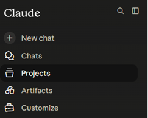
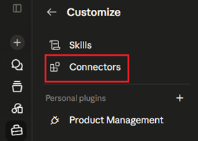
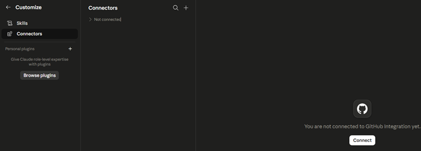
Η διασύνδεση του Claude με εξωτερικές υπηρεσίες είναι μια εξαιρετικά απλή διαδικασία, η οποία ακολουθεί τα αυστηρότερα διεθνή πρότυπα ασφαλείας (μέσω πρωτοκόλλων OAuth). Το σύστημα δεν σας ζητά ποτέ τους κωδικούς σας, αλλά χρησιμοποιεί την επίσημη οδό εξουσιοδότησης της εκάστοτε πλατφόρμας. Το Claude αποκτά πρόσβαση μόνο στα δεδομένα που εσείς επιτρέπετε.
Βήματα Ενεργοποίησης
- Το εικονίδιο «+» Μεταβείτε στο ειδικό μενού των Connectors και πατήστε το εικονίδιο «+».
- Επιλογή πλατφόρμας Επιλέξτε την πλατφόρμα που επιθυμείτε να συνδέσετε (π.χ. Google Drive ή Slack).
- Connect (Σύνδεση) Κάντε κλικ στο Connect (Σύνδεση). Θα ανακατευθυνθείτε στο ασφαλές περιβάλλον της αντίστοιχης υπηρεσίας (π.χ. στη σελίδα σύνδεσης της Google).
- Allow (Αποδοχή) Διαβάστε προσεκτικά την οθόνη συγκατάθεσης που σας εξηγεί ακριβώς σε ποια δεδομένα θα έχει πρόσβαση το Claude, και πατήστε Allow (Αποδοχή).
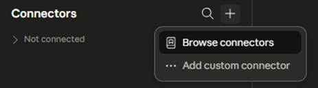
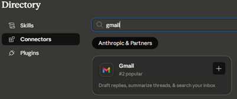
Βάλτε τα βήματα στη σωστή σειρά
Τοποθετήστε τα βήματα ενεργοποίησης ενός connector στη σωστή σειρά (κάντε κλικ στα βήματα με τη σειρά που εκτελούνται):
4. Διαχείριση Δικαιωμάτων Πρόσβασης & Ιδιωτικότητα
Η διασύνδεση του Claude με το ψηφιακό σας οικοσύστημα δεν σημαίνει ότι παραχωρείτε ανεξέλεγκτη πρόσβαση στα δεδομένα σας. Ο έλεγχος παραμένει πάντα στα χέρια σας, μέσα από ένα εξαιρετικά παραμετροποιήσιμο σύστημα αδειοδοτήσεων (Tool permissions), το οποίο διασφαλίζει ότι το μοντέλο θα ενεργεί αυστηρά εντός των ορίων που εσείς θα του θέσετε.
1. Άμεση Αποσύνδεση (Connect / Disconnect)
Η σχέση του Claude με τις εξωτερικές σας εφαρμογές είναι απολύτως αναστρέψιμη. Εάν ολοκληρώσετε ένα project ή απλώς επιθυμείτε να διακόψετε την πρόσβαση του μοντέλου σε μια συγκεκριμένη υπηρεσία, η διαδικασία είναι ακαριαία. Αρκεί να μεταβείτε στη λίστα των διασυνδέσεων και να επιλέξετε Disconnect. Η «γέφυρα» επικοινωνίας καταστρέφεται άμεσα και το Claude χάνει κάθε δυνατότητα αλληλεπίδρασης με το εν λόγω περιβάλλον, μέχρι να το συνδέσετε ξανά.
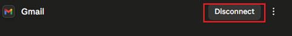
2. Έλεγχος Δικαιωμάτων (Tool Permissions)
Ακόμη και όταν μια εφαρμογή είναι συνδεδεμένη, το Claude χωρίζει τις ενέργειες που μπορεί να εκτελέσει σε συγκεκριμένα «εργαλεία» (tools). Σας δίνεται η δυνατότητα να ορίσετε ποια από αυτά τα εργαλεία θα εκτελούνται αυτόματα και ποια θα απαιτούν τη δική σας ρητή έγκριση (κλικ) πριν τεθούν σε λειτουργία. Αυτός ο διαχωρισμός γίνεται σε δύο βασικές κατηγορίες:
α) Εργαλεία Ανάγνωσης (Read-only tools)
Πρόκειται για ενέργειες παθητικής φύσης, όπου το Claude απλώς αναζητά, διαβάζει ή ανακτά δεδομένα (π.χ. ανάγνωση ενός εγγράφου, αναζήτηση μιας πληροφορίας στο αρχείο σας). Δεδομένου ότι αυτές οι ενέργειες δεν αλλοιώνουν τα δεδομένα σας, συνήθως ρυθμίζονται στο «Always allow» (Να επιτρέπεται πάντα). Έτσι, το μοντέλο μπορεί να αντλεί το απαραίτητο context για να σας απαντήσει, χωρίς να διακόπτει συνεχώς τη ροή της εργασίας σας ζητώντας άδειες.
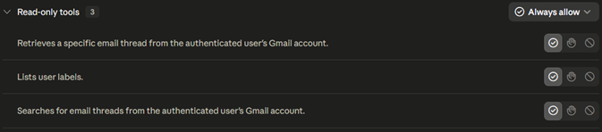
β) Εργαλεία Εγγραφής / Διαγραφής (Write/delete tools)
Εδώ υπάγονται όλες οι παρεμβατικές ενέργειες που τροποποιούν το περιβάλλον σας, όπως η δημιουργία προσχεδίων, η επεξεργασία αρχείων, η προσθήκη ετικετών ή, φυσικά, η διαγραφή δεδομένων. Για αυτές τις κρίσιμες λειτουργίες, η βέλτιστη πρακτική είναι να διατηρείτε τη ρύθμιση στο «Needs approval» (Απαιτείται έγκριση). Με αυτόν τον τρόπο, το Claude λειτουργεί ως βοηθός που προετοιμάζει τη δουλειά, αλλά το τελικό βήμα (η εκτέλεση) απαιτεί πάντα τη δική σας επιβεβαίωση, αποτρέποντας τυχόν ακούσιες ή λανθασμένες παρεμβάσεις στα αρχεία σας.
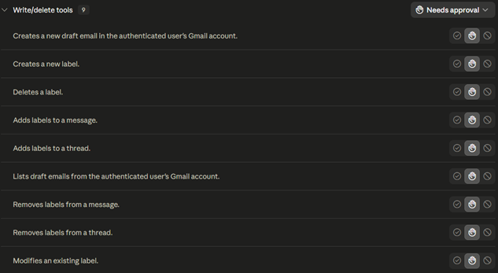
Πρακτικά workflows με Connectors
Τα πρακτικά workflows (ροές εργασίας) μέσω των Connectors αποτελούν την υψηλότερη βαθμίδα αξιοποίησης του Claude. Ουσιαστικά, πρόκειται για αλληλουχίες ενεργειών που εκτελούνται μέσα από ένα και μόνο παράθυρο συνομιλίας, αξιοποιώντας τις απευθείας συνδέσεις του μοντέλου με τις εξωτερικές σας εφαρμογές (όπως το Gmail, το Google Calendar και το Google Drive).
Η βασική αρχή είναι η εξοικονόμηση χρόνου και η συγκέντρωση της πληροφορίας. Αντί να εκτελείτε κάθε βήμα χειροκίνητα και να εναλλάσσεστε διαρκώς μεταξύ διαφορετικών καρτελών, ανοίγοντας το email, ελέγχοντας το ημερολόγιο, δημιουργώντας ένα ραντεβού ή αναζητώντας αρχεία — μεταβιβάζετε αυτή την πολυπλοκότητα στο Claude μέσω φυσικής γλώσσας. Το σύστημα αναλαμβάνει να εκτελέσει τις εργασίες στο παρασκήνιο.
Η Δύναμη της Σύνθεσης
Αυτό που διαφοροποιεί τα workflows από τις μεμονωμένες ενέργειες είναι η έννοια της σύνθεσης. Σε μια σωστά σχεδιασμένη ροή, το αποτέλεσμα του πρώτου βήματος τροφοδοτεί οργανικά το επόμενο. Έτσι, το Claude μετατρέπεται από ένα εργαλείο παραγωγής κειμένου σε έναν ενεργό ψηφιακό βοηθό που διαχειρίζεται ολοκληρωμένες διαδικασίες.
Το κλειδί εδώ είναι η πρακτικότητα. Δεν αναφερόμαστε σε θεωρητικές δυνατότητες, αλλά σε καθημερινά, ρεαλιστικά σενάρια εργασίας τα οποία μπορείτε να εφαρμόσετε άμεσα:
Τα Workflows 1 & 2
1. Το Workflow της «Πρωινής Προετοιμασίας» (Morning Briefing)
«Λειτούργησε ως ο προσωπικός μου βοηθός και αναζήτησε στο Gmail μου τα πρόσφατα αδιάβαστα μηνύματα.»
Η εκτέλεση: Το Claude ενεργοποιεί τον απαραίτητο connector και συνδέεται στο παρασκήνιο με τον λογαριασμό σας στο Gmail, πραγματοποιώντας στοχευμένη σάρωση των εισερχομένων. Μέσα σε ελάχιστα δευτερόλεπτα, επεξεργάζεται τον όγκο των αδιάβαστων μηνυμάτων και σας παρουσιάζει μια καθαρή, δομημένη σύνοψη σε μορφή πίνακα, επιτρέποντάς σας να ενημερωθείτε άμεσα για τις εκκρεμότητές σας χωρίς να ανοίξετε την εφαρμογή του ηλεκτρονικού ταχυδρομείου.
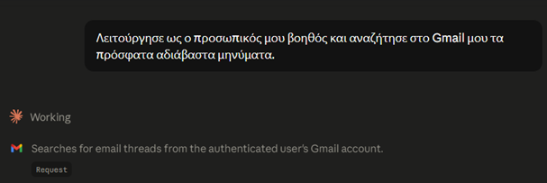
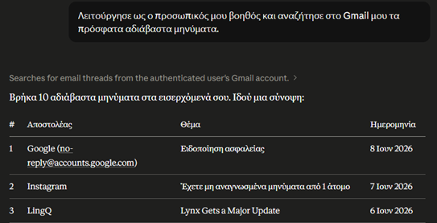
2. Το Workflow του «Στρατηγικού Ημερήσιου Προγραμματισμού»
Αυτή η ροή εργασίας αποδεικνύει πώς το Claude δεν λειτουργεί απλώς ως μηχανή αναζήτησης, αλλά ως ένας στρατηγικός συνεργάτης που οργανώνει τον χρόνο σας. Η διαδικασία εκτελείται σε δύο αλληλένδετα βήματα:
«Έλεγξε το Google Calendar μου για όλες τις προγραμματισμένες συναντήσεις και υποχρεώσεις που έχω σήμερα.»
Η εκτέλεση: Το Claude ενεργοποιεί τον connector του Google Calendar και ανασύρει με ακρίβεια τα προγραμματισμένα γεγονότα (π.χ. συναντήσεις με ομάδες). Παράλληλα, αναλύει τον διαθέσιμο χρόνο, εντοπίζοντας αυτόματα τα κενά ή τα διαλείμματα μεταξύ των υποχρεώσεων, προσφέροντας μια πρώτη ξεκάθαρη εικόνα της ημέρας.
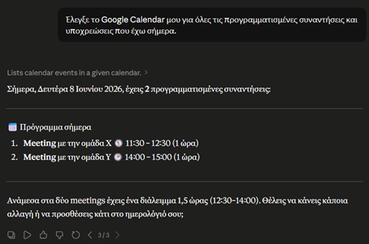
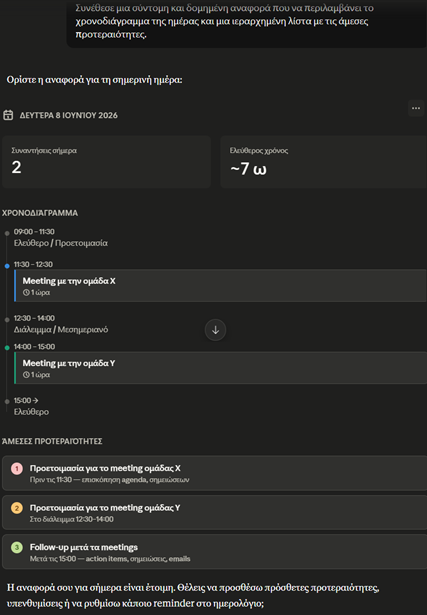
Τα Workflows 3 & 4
3. Το Workflow της «Έξυπνης Διαχείρισης Αλληλογραφίας»
«Διάβασε το τελευταίο email από τον [Όνομα Πελάτη/Συνεργάτη], ετοίμασε ένα προσχέδιο (draft) απάντησης που να επιβεβαιώνει τη συνάντηση και φτιάξε το αντίστοιχο event στο ημερολόγιό μου.»
Η εκτέλεση: Το μοντέλο εντοπίζει το μήνυμα, συντάσσει και αποθηκεύει την απάντηση στα πρόχειρα του Gmail (ώστε να την ελέγξετε πριν σταλεί) και δημιουργεί την εγγραφή στο Calendar. Μια αλυσίδα τριών διαφορετικών συστημάτων ολοκληρώνεται με ένα μόνο prompt.
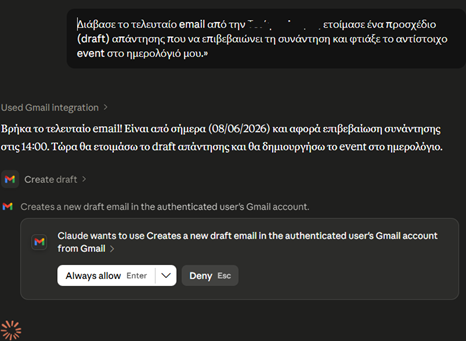
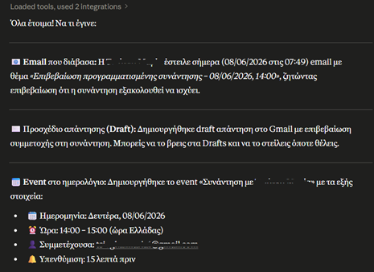
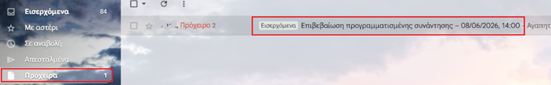
4. Το Workflow της «Αναζήτησης και Σύνοψης»
«Ψάξε στο Google Drive για το έγγραφο με τίτλο "Οι Περιβαλλοντικές Επιπτώσεις της Γρήγορης Μόδας" και κάνε μου μια σύνοψη του εγγράφου.»
Η εκτέλεση: Το εργαλείο παρακάμπτει εντελώς τη διαδικασία της χειροκίνητης αναζήτησης και μεταφόρτωσης αρχείων. Εντοπίζει το σωστό έγγραφο στο Drive, το αναλύει και σας επιστρέφει απευθείας τα ζητούμενα έτοιμα προς χρήση.
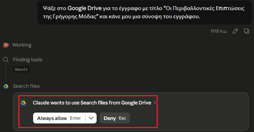
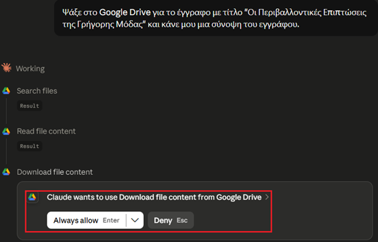
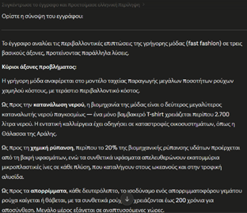
Αντιστοιχίστε τα workflows
Αντιστοιχίστε κάθε workflow με τη λειτουργία που επιτελεί (επιλέξτε ένα στοιχείο από κάθε στήλη):
Συνοψίζοντας
Συνοψίζοντας, η πρακτική εφαρμογή των Connectors και η δημιουργία δομημένων workflows αλλάζουν ριζικά τον τρόπο με τον οποίο αλληλεπιδρούμε με την Τεχνητή Νοημοσύνη. Όπως είδαμε μέσα από τα ρεαλιστικά παραδείγματα, από την έξυπνη επισκόπηση της αλληλογραφίας και τον στρατηγικό προγραμματισμό του ημερολογίου, μέχρι τη στοχευμένη αναζήτηση και σύνοψη εγγράφων, το Claude ξεφεύγει από τα στενά όρια ενός παθητικού εργαλείου παραγωγής κειμένου.
Η ενσωμάτωση αυτών των διασυνδέσεων μετατρέπει το μοντέλο σε έναν κεντρικό, διαδραστικό κόμβο παραγωγικότητας που προσφέρει τρία καθοριστικά πλεονεκτήματα:
1. Εξάλειψη του Context Switching
Δεν χρειάζεται πλέον να διακόπτετε τη ροή της σκέψης σας για να ανοίξετε πολλαπλές καρτέλες και διαφορετικές εφαρμογές (Gmail, Calendar, Drive). Όλη η εργασία συγκεντρώνεται και ολοκληρώνεται μέσα σε ένα ενιαίο, «ήσυχο» περιβάλλον διεπαφής.
2. Αυτοματοποίηση Ρουτίνας
Χρονοβόρες και επαναλαμβανόμενες μικρο-εργασίες (όπως η εύρεση ενός αρχείου, η ανάγνωση των αδιάβαστων emails ή η δημιουργία ενός προσχεδίου) εκτελούνται πλέον στο παρασκήνιο σε ελάχιστα δευτερόλεπτα, απελευθερώνοντας πολύτιμο χρόνο για πιο δημιουργικές και στρατηγικές αποφάσεις.
3. Ασφάλεια και Έλεγχος
Η ταχύτητα αυτή δεν έρχεται εις βάρος της ασφάλειας. Όπως αποδείχθηκε στα workflows, ο χρήστης παραμένει πάντα στο επίκεντρο της διαδικασίας, διατηρώντας το δικαίωμα της τελικής έγκρισης (έλεγχος προσχεδίων, αδειοδοτήσεις) πριν από κάθε παρεμβατική ενέργεια στα δεδομένα του.
Αφομοιώνοντας τη λογική των Connectors, δεν μαθαίνετε απλώς να χρησιμοποιείτε μια πλατφόρμα ΑΙ. Στην ουσία, σχεδιάζετε και εφαρμόζετε το δικό σας, απολύτως προσωποποιημένο και εξαιρετικά αποδοτικό σύστημα ψηφιακής εργασίας.
Skills — τι είναι και πώς «διδάσκεις» διαδικασίες
Claude Skills
Το βίντεο παρουσιάζει στην πράξη τον μηχανισμό των Skills: πώς το Claude «μαθαίνει» πάγιες διαδικασίες, πώς λειτουργούν οι προεγκατεστημένες δεξιότητες και πώς ξεκινάτε με τις δικές σας.
Τι να προσέξετε: τον ρόλο του αρχείου SKILL.md, τη διαφορά ανάμεσα σε Pre-built και Custom Skills, και τα σημεία του μενού Customize > Skills όπου γίνεται η διαχείριση.
Μετά το βίντεο: τι είναι το SKILL.md;
Τι ακριβώς είναι το αρχείο SKILL.md στον πυρήνα ενός Skill;
1. Τι είναι τα Skills
Τα Skills (Δεξιότητες) αποτελούν έναν προηγμένο μηχανισμό του Claude, ο οποίος σας επιτρέπει να του «διδάξετε» μια συγκεκριμένη διαδικασία ή έναν πάγιο τρόπο εργασίας, καταργώντας την ανάγκη να επαναλαμβάνετε τις ίδιες οδηγίες σε κάθε νέα συνομιλία. Σκεφτείτε ένα Skill ως ένα αυστηρό «εγχειρίδιο λειτουργιών» (SOP — Standard Operating Procedure) που παραδίδετε στο μοντέλο για την εκτέλεση μιας συγκεκριμένης εργασίας.
Το αρχείο SKILL.md
Στον πυρήνα του, ένα Skill στηρίζεται σε ένα αρχείο με την ονομασία SKILL.md. Πρόκειται ουσιαστικά για ένα απλό κείμενο (σε μορφή Markdown), στο οποίο περιγράφετε με φυσική γλώσσα:
Δεν απαιτείται καμία απολύτως γνώση προγραμματισμού, αρκεί μια σαφής, λογικά δομημένη περιγραφή.
Ένα παράδειγμα από την πράξη
Για παράδειγμα, εάν δημιουργείτε μια εβδομαδιαία αναφορά σε Word με συγκεκριμένη δομή (Τίτλος, Εισαγωγή, Πίνακας Ευρημάτων, Συμπεράσματα), αντί να περιγράφετε αυτή τη δομή από την αρχή, δημιουργείτε ένα Skill.
Οι οδηγίες σας θα ορίζουν: «Όταν ο χρήστης ζητήσει την εβδομαδιαία αναφορά, δημιούργησε ένα αρχείο Word ακολουθώντας ακριβώς αυτές τις επικεφαλίδες και αυτή τη μορφοποίηση». Έκτοτε, μια απλή εντολή όπως «Φτιάξε την αναφορά της εβδομάδας» είναι αρκετή για να παραγάγει το τέλειο αποτέλεσμα.
Οι δύο βασικές κατηγορίες Skills
Στην πλατφόρμα του Claude συναντάμε δύο βασικές κατηγορίες Skills:
Pre-built Skills (Προεγκατεστημένες Δεξιότητες)
Πρόκειται για έτοιμες, ενσωματωμένες δυνατότητες που παρέχει απευθείας η Anthropic (όπως η δημιουργία και η επεξεργασία αρχείων PDF, Excel, Word και PowerPoint). Το Claude τις αναγνωρίζει και τις ενεργοποιεί αυτόματα στο παρασκήνιο, προσαρμοζόμενο στις απαιτήσεις της εκάστοτε εργασίας, χωρίς να χρειάζεται καμία απολύτως ενέργεια από τον χρήστη.
Custom / User Skills (Προσαρμοσμένες Δεξιότητες)
Είναι τα Skills που σχεδιάζετε εσείς, αποκλειστικά για να καλύψετε τις δικές σας, εξειδικευμένες επαγγελματικές ανάγκες. Η μεταφόρτωσή τους στην πλατφόρμα γίνεται μέσω συμπιεσμένων αρχείων (.zip) και η πλήρης διαχείρισή τους πραγματοποιείται μέσα από το κεντρικό μενού Customize > Skills. Από εκεί μπορείτε να τα επεξεργαστείτε, να τα ενεργοποιήσετε ή να προσθέσετε νέα. Η δημιουργία και χρήση τους απαιτεί να είναι ενεργοποιημένη η λειτουργία Code Execution (Εκτέλεση Κώδικα) και είναι διαθέσιμη αποκλειστικά στα πλάνα Pro, Max, Team και Enterprise.
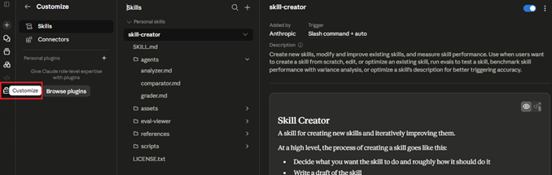
2. Η θεμελιώδης διαφορά: Skills vs. Projects
Ένα από τα συχνότερα σημεία σύγχυσης κατά τη χρήση του Claude είναι η διάκριση μεταξύ των Projects και των Skills. Ενώ και τα δύο εργαλεία βελτιώνουν την παραγωγικότητα, εξυπηρετούν εντελώς διαφορετικούς σκοπούς:
Τα Projects δημιουργούν το «Πλαίσιο» (Το Ποιος & το Τι)
Ένα Project είναι ένας θεματικός χώρος εργασίας. Ορίζει τον ρόλο του μοντέλου, τους γενικούς κανόνες συμπεριφοράς και περιέχει τη βάση γνώσεων (αρχεία αναφοράς).
Τα Skills ορίζουν τη «Διαδικασία» (Το Πώς)
Ένα Skill δεν παρέχει γενική γνώση ούτε πλαίσιο. Είναι αυστηρά εκτελεστικό. Ορίζει βήματα, κανόνες μορφοποίησης και συγκεκριμένα παραδοτέα (output).
Συγκριτικός πίνακας
Για την καλύτερη κατανόηση, παραθέτουμε τον ακόλουθο συγκριτικό πίνακα:
| Χαρακτηριστικό | Projects | Skills |
|---|---|---|
| Λειτουργία | Είναι θεματικοί χώροι εργασίας. | Είναι αυτοματοποιημένες διαδικασίες. |
| Περιεχόμενο | Ρόλος, πλαίσιο (context), βάση γνώσης (αρχεία αναφοράς) | Βήματα εκτέλεσης, κανόνες, format εξόδου. |
| Εφαρμογή | Μόνο εντός του συγκεκριμένου Project. | Σε οποιαδήποτε συνομιλία του λογαριασμού. |
| Παράδειγμα | «Είσαι Σύμβουλος Περιβαλλοντικής Αδειοδότησης. Διάβασε αυτή τη νομοθεσία.» | «Όταν ζητήσω ΜΠΕ, ακολούθησε αυτά τα 7 συγκεκριμένα βήματα δομής.» |
Τα δύο αυτά εργαλεία λειτουργούν ιδανικά σε συνέργεια. Μπορείτε να έχετε ένα Project που ορίζει τον γενικό ρόλο, και μέσα σε αυτό να αξιοποιείτε Skills που καθοδηγούν την εκτέλεση επιμέρους εργασιών.
Projects ή Skills;
Επιλέξτε σε ποιο εργαλείο αντιστοιχεί κάθε περιγραφή:
«Θεματικός χώρος εργασίας με ρόλο, γενικούς κανόνες και βάση γνώσεων» →
«Αυστηρά εκτελεστικό: βήματα, κανόνες μορφοποίησης, συγκεκριμένα παραδοτέα» →
«Εφαρμόζεται μόνο εντός του συγκεκριμένου θεματικού χώρου» →
«Εφαρμόζεται σε οποιαδήποτε συνομιλία του λογαριασμού» →
3. Πότε μια εργασία απαιτεί τη δημιουργία Skill
Ο χρυσός κανόνας της παραγωγικότητας είναι ο εξής: Σε περίπτωση που παρατηρήσετε πως επαναλαμβάνετε την εισαγωγή των ίδιων οδηγιών στο Claude περισσότερες από δύο φορές, τότε η διαδικασία αυτή πρέπει να μετατραπεί σε Skill.
Πιο συγκεκριμένα, μια εργασία είναι η ιδανική υποψήφια για τη δημιουργία Skill όταν πληροί ένα ή περισσότερα από τα παρακάτω κριτήρια:
Τα κριτήρια
Η εργασία απαιτεί πάντα τα ίδια ακριβώς βήματα ή το αποτέλεσμα πρέπει να έχει μια σταθερή αρχιτεκτονική (π.χ. φόρμες αξιολόγησης, πρότυπα απαντητικών email, τυποποιημένες αναφορές).
Όταν το παραδοτέο πρέπει να τηρεί συγκεκριμένες τεχνικές προδιαγραφές (συγκεκριμένες γραμματοσειρές, πίνακες με προκαθορισμένες στήλες, εξαγωγή σε συγκεκριμένο τύπο αρχείου).
Εάν για να κάνετε σωστά τη δουλειά σας χρειάζεται να γράψετε ένα prompt 10 έως 15 γραμμών με αναλυτικές παραμέτρους, αυτή η «γνώση» πρέπει να αποθηκευτεί μόνιμα σε ένα Skill για να μην τη χάσετε.
Όταν η εργασία ακολουθεί μια απαράβατη λογική σειρά (π.χ. «Πρώτα διάβασε το επισυναπτόμενο αρχείο, έπειτα κάνε τη συγκεκριμένη μαθηματική πράξη και, τέλος, εξήγαγε το αποτέλεσμα σε πίνακα»).
Αντίθετα, η δημιουργία ενός Skill περιττεύει όταν η εργασία είναι ad-hoc/μοναδική (π.χ. «Ανάλυσέ μου τις βασικές αρχές του Blockchain») ή όταν το ζητούμενο αλλάζει ριζικά σε κάθε περίσταση, χωρίς να διαγράφεται κάποιο κοινό, επαναλαμβανόμενο μοτίβο.
Παραδείγματα έτοιμων Skills και πώς να φτιάξεις δικά σου
Α. Αξιοποίηση έτοιμων (Pre-built) Skills
Η λειτουργία των προεγκατεστημένων δεξιοτήτων (Pre-built Skills) χαρακτηρίζεται από πλήρη αυτοματοποίηση, καθώς δεν απαιτείται καμία εξειδικευμένη ενέργεια ή ειδική εντολή (call) από την πλευρά του χρήστη για την ενεργοποίησή τους. Το Claude διαθέτει την ικανότητα να αναλύει το περιεχόμενο του αιτήματός σας σε φυσική γλώσσα και να αναγνωρίζει αυτόνομα ποιο συγκεκριμένο Skill είναι απαραίτητο για την ορθή εκτέλεση της εργασίας.
Εσείς αρκεί απλώς να περιγράψετε το επιθυμητό παραδοτέο, όπως για παράδειγμα, τη δημιουργία ενός αρχείου Word ή την εξαγωγή δεδομένων σε έναν πίνακα Excel και το μοντέλο θα επιστρατεύσει αυτόματα το κατάλληλο εργαλείο στο παρασκήνιο, διασφαλίζοντας την ακρίβεια και την τυποποίηση του τελικού αποτελέσματος.
Τέσσερα παραδείγματα Pre-built Skills
Παράδειγμα 1 — Word (docx)
«Δημιούργησε ένα επαγγελματικό υπόμνημα (memo) σε Word, με θέμα την πρόταση αναβάθμισης του δικτύου Wi-Fi στον 3ο όροφο. Αποδέκτης: Τμήμα IT. Να περιλαμβάνει τρέχουσα κατάσταση, πρόταση λύσης, εκτιμώμενο κόστος και χρονοδιάγραμμα.»
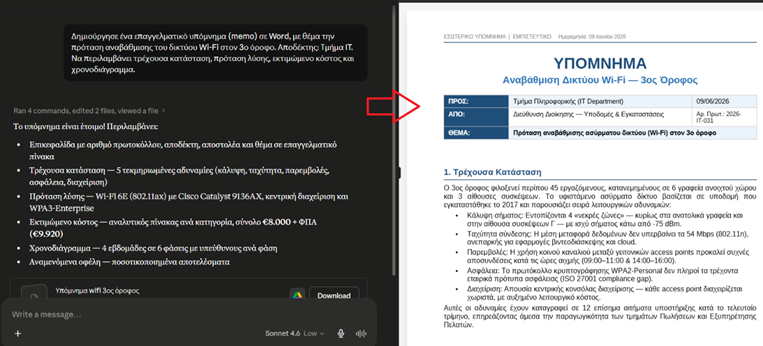
Στο παράδειγμα βλέπετε, ότι το Claude αναγνωρίζει αυτό που του ζητάει ο χρήστης, το οποίο είναι ένα έγγραφο Word. Επομένως, φορτώνει αυτόματα το docx Skill, παράγοντας ένα επαγγελματικό υπόμνημα χωρίς καμία επιπλέον ρύθμιση.
Παράδειγμα 2 — Excel (xlsx)
«Φτιάξε ένα αρχείο Excel με μηνιαία παρακολούθηση εξόδων τμήματος. Στήλες: Ημερομηνία, Κατηγορία δαπάνης, Περιγραφή, Ποσό, Υπόλοιπο budget. Πρόσθεσε τύπο αυτόματου αθροίσματος και μορφοποίηση κεφαλίδων.»
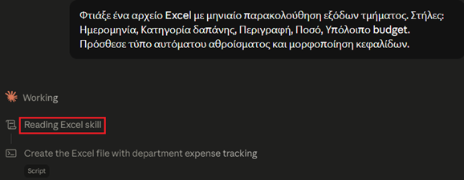
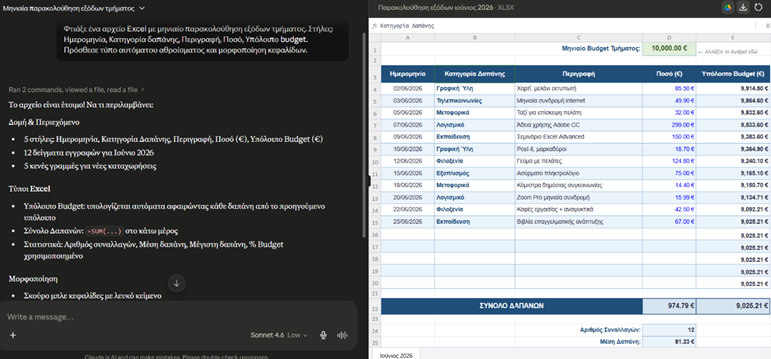
Παράδειγμα 3 — PowerPoint (pptx)
«Δημιούργησε μια παρουσίαση 5 διαφανειών για ενημέρωση της διοίκησης σχετικά με την πρόοδο του έργου ψηφιακού μετασχηματισμού. Δομή: Τίτλος, τρέχουσα κατάσταση, ορόσημα που ολοκληρώθηκαν, εκκρεμότητες, επόμενα βήματα.»
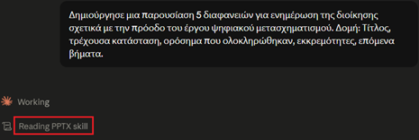
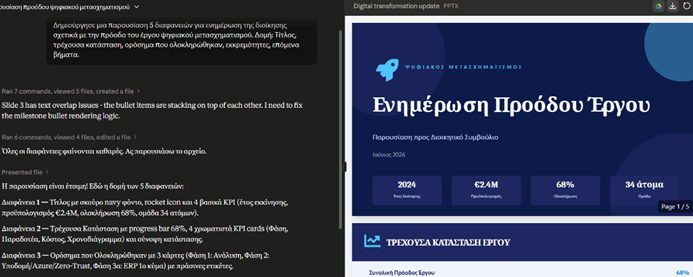
Παράδειγμα 4 — PDF
«Διάβασε το συνημμένο PDF και εξήγαγε σε πίνακα: τίτλο εγγράφου, ημερομηνία, βασικά ευρήματα και συμπεράσματα.»
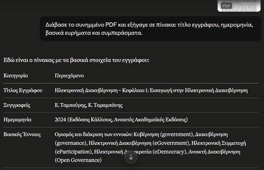
Β. Δημιουργία δικού σας Skill
Για την δημιουργία του δικού σας Skill υπάρχουν 3 τρόποι.
Τρόπος 1ος
Για να δημιουργήσετε ένα δικό σας Skill χρειάζονται τρία βήματα:
Βήμα 1: Αναγνωρίστε την επαναλαμβανόμενη εργασία. Σκεφτείτε: ποια εργασία κάνετε κάθε εβδομάδα (ή κάθε μήνα) με τον ίδιο τρόπο;
Παράδειγμα: Εβδομαδιαία γράφετε αναφορά προόδου έργου για τον προϊστάμενό σας, πάντα με την ίδια δομή.
Βήμα 2: Περιγράψτε τη διαδικασία σε φυσική γλώσσα
Γράψτε ένα αρχείο SKILL.md που περιγράφει τι κάνει το Skill, πότε πρέπει να ενεργοποιείται, και ποια βήματα ακολουθεί. Δεν χρειάζεται κώδικας, μόνο σαφείς οδηγίες.
Ανοίγετε το Notepad (Σημειωματάριο στον υπολογιστή σας).
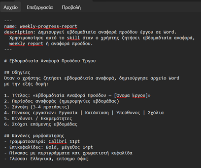
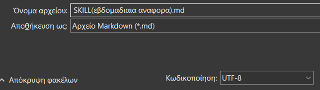
Βήμα 3: Ανεβάστε το Skill
Αποθηκεύστε τον φάκελο ως .zip και ανεβάστε τον μέσω Customize > Skills > κουμπί "+".
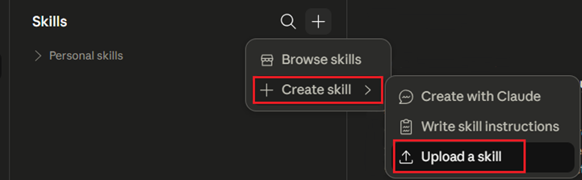
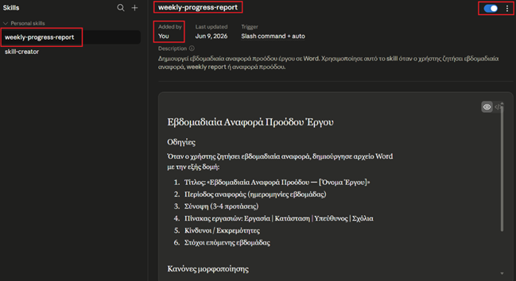
Παράδειγμα αρχείου SKILL.md για εβδομαδιαία αναφορά
---
name: weekly-progress-report
description: Δημιουργεί εβδομαδιαία αναφορά προόδου έργου σε Word. Χρησιμοποίησε αυτό το skill όταν ο χρήστης ζητήσει εβδομαδιαία αναφορά, weekly report ή αναφορά προόδου.
---
# Εβδομαδιαία Αναφορά Προόδου Έργου
## Οδηγίες
Όταν ο χρήστης ζητήσει εβδομαδιαία αναφορά, δημιούργησε αρχείο Word με την εξής δομή:
1. Τίτλος: «Εβδομαδιαία Αναφορά Προόδου — [Όνομα Έργου]»
2. Περίοδος αναφοράς (ημερομηνίες εβδομάδας)
3. Σύνοψη (3-4 προτάσεις)
4. Πίνακας εργασιών: Εργασία | Κατάσταση | Υπεύθυνος | Σχόλια
5. Κίνδυνοι / Εκκρεμότητες
6. Στόχοι επόμενης εβδομάδας
## Κανόνες μορφοποίησης
- Γραμματοσειρά: Calibri 11pt
- Επικεφαλίδες: Bold, μέγεθος 14pt
- Πίνακας με περιγράμματα και χρωματιστή κεφαλίδα
- Γλώσσα: Ελληνικά, επίσημο ύφος
Το νέο σας Skill στο περιβάλλον του Claude
Μόλις ολοκληρωθεί η διαδικασία της μεταφόρτωσης, το νέο σας προσαρμοσμένο Skill (όπως, για παράδειγμα, το «weekly-progress-report») ενσωματώνεται άμεσα στο περιβάλλον του Claude. Πλοηγούμενοι στο κεντρικό μενού Customize > Skills, μπορείτε πλέον να εντοπίσετε το συγκεκριμένο εργαλείο στη λίστα των διαθέσιμων επιλογών.
Στη συγκεκριμένη διεπαφή αποτυπώνονται με σαφήνεια όλα τα κρίσιμα στοιχεία ελέγχου και διαχείρισης: η ακριβής ονομασία της δεξιότητας, η ειδική ένδειξη «Added by: You» η οποία επιβεβαιώνει την αποκλειστική σας ιδιοκτησία, ο κεντρικός διακόπτης ενεργοποίησης (toggle) για την εναλλαγή της κατάστασης λειτουργίας του, καθώς και το πλήρες περιεχόμενο των δομημένων οδηγιών που έχετε ενσωματώσει μέσω του αρχείου SKILL.md.
Το Skill σε δράση
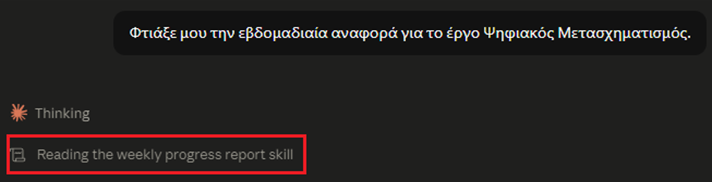
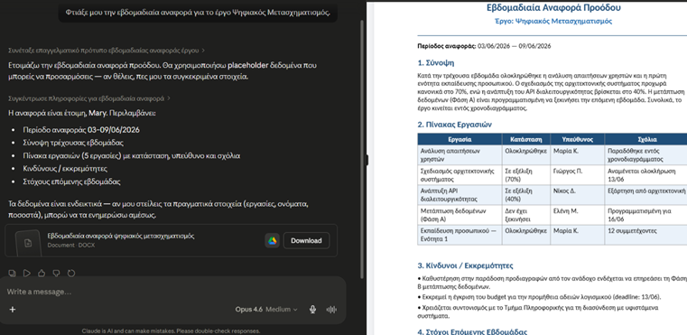
Βάλτε τα βήματα στη σωστή σειρά
Βάλτε στη σωστή σειρά τα βήματα της χειροκίνητης δημιουργίας Skill (Τρόπος 1ος):
Γ. Ενεργοποίηση / Απενεργοποίηση Skill
Δίπλα σε κάθε Skill υπάρχει ένας διακόπτης (toggle). Αν τον απενεργοποιήσετε, το Skill παραμένει αποθηκευμένο αλλά το Claude δεν θα το χρησιμοποιεί μέχρι να το ενεργοποιήσετε ξανά.
Αυτό είναι χρήσιμο όταν θέλετε προσωρινά να απενεργοποιήσετε ένα Skill χωρίς να το διαγράψετε.
Δ. Διαχείριση Skill — Επεξεργασία, Λήψη και Διαγραφή
Για κάθε Skill που έχετε δημιουργήσει, πηγαίνετε στο Customize > Skills, επιλέξτε το Skill και πατήστε το εικονίδιο με τις τρεις τελείες (⋮) πάνω δεξιά. Το μενού προσφέρει τρεις επιλογές:
Edit
Επεξεργασία του Skill. Μπορείτε να τροποποιήσετε τις οδηγίες, τη δομή ή τους κανόνες μορφοποίησης χωρίς να χρειαστεί να το διαγράψετε και να το ξαναδημιουργήσετε.
Download
Λήψη του Skill ως αρχείο .zip στον υπολογιστή σας. Χρήσιμο για να κρατάτε αντίγραφα ασφαλείας ή να μοιραστείτε ένα Skill με συναδέλφους.
Delete
Οριστική διαγραφή του Skill. Η ενέργεια αυτή δεν αναιρείται, αν υπάρχει πιθανότητα να το χρειαστείτε ξανά, κάντε πρώτα Download και μετά Delete.
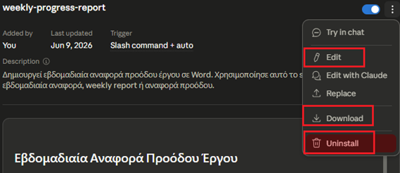
2ος Τρόπος δημιουργίας Skill — «Create with Claude»
Εκτός από τη χειροκίνητη δημιουργία, η πλατφόρμα προσφέρει έναν πιο εύκολο τρόπο. Μπορείτε να ζητήσετε από τον ίδιο τον Claude να φτιάξει το Skill για εσάς. Πηγαίνετε στο Customize > Skills, πατήστε το κουμπί «+» και επιλέξτε «Create with Claude».
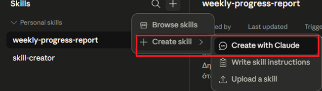
Περιγράφετε τι θέλετε να κάνει το Skill
Στη συνέχεια, περιγράφετε σε φυσική γλώσσα τι θέλετε να κάνει το Skill. Για παράδειγμα:
«Θέλω ένα Skill που να δημιουργεί εβδομαδιαία αναφορά προόδου έργου σε Word. Να περιλαμβάνει τίτλο, περίοδο αναφοράς, σύνοψη, πίνακα εργασιών με στήλες Εργασία/Κατάσταση/Υπεύθυνος/Σχόλια, κινδύνους και στόχους επόμενης εβδομάδας. Γλώσσα ελληνικά, επίσημο ύφος.»
Το Claude θα δημιουργήσει αυτόματα το αρχείο SKILL.md με τη σωστή δομή, τους κανόνες και τα triggers, και θα το αποθηκεύσει απευθείας στα Skills σας, χωρίς να χρειαστεί να γράψετε κώδικα ή να ανεβάσετε αρχείο.
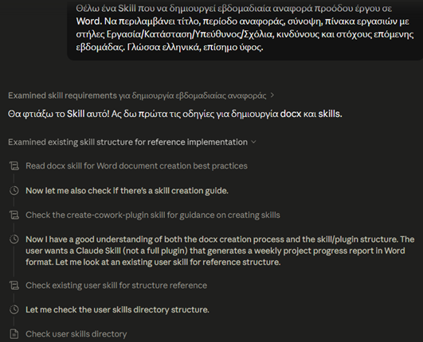
Η δημιουργία σε εξέλιξη — και το τελικό αποτέλεσμα
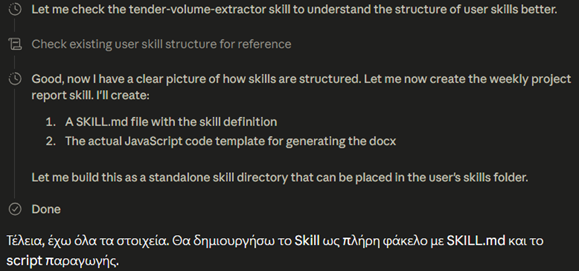
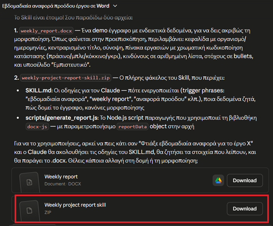
3ος Τρόπος δημιουργίας Skill — «Write skill instructions»
Πηγαίνοντας πάλι στο μενού Skills και επιλέγοντας το εικονίδιο «+» επιλέγετε το «Write skill instructions», μπορείτε να δημιουργήσετε ένα skill συμπληρώνοντας τα πεδία της φόρμας.
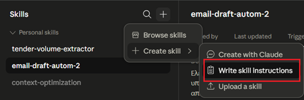
Αυτή είναι η φόρμα χειροκίνητης δημιουργίας Skill. Τα τρία πεδία:
Skill name
Το όνομα του Skill σας. Χρησιμοποιήστε πεζά λατινικά με παύλες, χωρίς κενά και ελληνικούς χαρακτήρες. Π.χ.: weekly-progress-report
Description
Περιγράφει τι κάνει το Skill και πότε πρέπει ο Claude να το ενεργοποιήσει. Αυτό είναι κρίσιμο γιατί ο Claude διαβάζει αυτό το πεδίο για να αποφασίσει αν θα χρησιμοποιήσει το Skill. Π.χ. «Δημιουργεί εβδομαδιαία αναφορά προόδου έργου σε Word. Χρησιμοποίησε αυτό το skill όταν ο χρήστης ζητήσει εβδομαδιαία αναφορά, weekly report ή αναφορά προόδου.»
Instructions
Οι αναλυτικές οδηγίες που θα ακολουθεί το Claude. Εδώ γράφετε τη δομή, τα βήματα, τους κανόνες μορφοποίησης. Π.χ. «Δημιούργησε αρχείο Word με την εξής δομή: 1. Τίτλος: Εβδομαδιαία Αναφορά Προόδου — [Όνομα Έργου] 2. Περίοδος αναφοράς 3. Σύνοψη (3-4 προτάσεις) 4. Πίνακας εργασιών: Εργασία | Κατάσταση | Υπεύθυνος | Σχόλια 5. Κίνδυνοι / Εκκρεμότητες 6. Στόχοι επόμενης εβδομάδας. Γραμματοσειρά Calibri 11pt, επικεφαλίδες bold 14pt, γλώσσα ελληνικά, επίσημο ύφος.»
Πατήστε Create — και είναι έτοιμο
Μόλις πατήσετε Create, το Skill αποθηκεύεται αυτόματα στη λίστα σας και είναι έτοιμο προς χρήση.
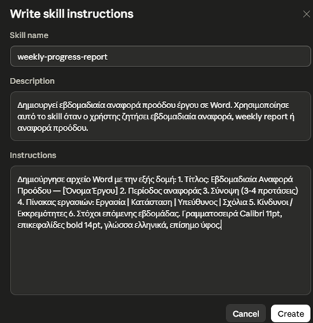
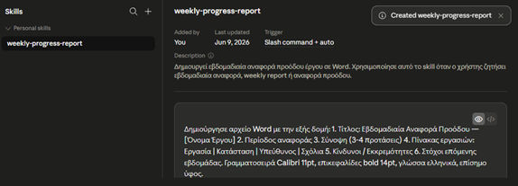
Συμπερασματικά
Συμπερασματικά, η κατανόηση και η ενσωμάτωση των Skills στην καθημερινή σας ροή εργασίας σηματοδοτεί τη μετάβαση από την απλή «συνομιλία» με την Τεχνητή Νοημοσύνη στον συνειδητό σχεδιασμό ψηφιακών συστημάτων. Είτε αξιοποιείτε την αόρατη αποτελεσματικότητα των Pre-built Skills, είτε αναπτύσσετε τα δικά σας, εξειδικευμένα Custom Skills, το όφελος είναι διττό. Πρώτον, εξασφαλίζετε απόλυτη συνέπεια στα παραδοτέα σας και δεύτερον εκμηδενίζετε τον χρόνο που σπαταλούσατε σε επαναλαμβανόμενες οδηγίες. Ουσιαστικά, καταργείτε την ανάγκη να εξηγείτε διαρκώς το «πώς» πρέπει να γίνει μια εργασία. Αναλαμβάνοντας τον ρόλο του δημιουργού διαδικασιών, εκπαιδεύετε το Claude να σκέφτεται και να παράγει έργο ευθυγραμμισμένο απόλυτα με τα δικά σας, αυστηρά επαγγελματικά πρότυπα, μετατρέποντάς το στο απόλυτο εργαλείο κλιμάκωσης (scaling) της παραγωγικότητάς σας.
Claude Desktop – Cowork — ο αυτόνομος ψηφιακός βοηθός
Claude Desktop και Cowork
Το βίντεο σας ξεναγεί στην εφαρμογή Claude Desktop και στη λειτουργία Cowork: από την εγκατάσταση και τα τρία περιβάλλοντα εργασίας, μέχρι την ανάθεση αυτόνομων εργασιών σε τοπικούς φακέλους.
Τι να προσέξετε: τη διαφορά της desktop εφαρμογής από τη web έκδοση, τον ρόλο του Φακέλου Εργασίας (Working Folder) και τα δύο επίπεδα αυτονομίας (Ask before acting / Act without asking).
Μετά το βίντεο: η ειδοποιός διαφορά
Ποια είναι η ειδοποιός διαφορά του Claude Desktop σε σχέση με τη διαδικτυακή έκδοση (claude.ai);
Claude Desktop
Το Claude Desktop αποτελεί την αυτόνομη εφαρμογή συστήματος (διαθέσιμη για το λειτουργικό περιβάλλον των Windows), η οποία παρέχει ενοποιημένη πρόσβαση σε όλες τις προηγμένες λειτουργίες του μοντέλου, συγκεκριμένα στα εργαλεία Chat, Cowork και Code, καταργώντας πλήρως την ανάγκη χρήσης κάποιου περιηγητή ιστού (web browser).
Η ειδοποιός διαφορά από τη web έκδοση
Η ειδοποιός διαφορά της desktop εφαρμογής σε σχέση με τη διαδικτυακή έκδοση (claude.ai) έγκειται στην ικανότητά της να διασυνδέεται άμεσα με τον τοπικό σας υπολογιστή. Σε αντίθεση με τον browser, ο οποίος από τη φύση του λειτουργεί σε ένα αυστηρά απομονωμένο περιβάλλον ασφαλείας, η εφαρμογή Desktop μπορεί να εκτελέσει το εργαλείο Cowork, αποκτώντας τις εξής διευρυμένες δυνατότητες:
- Απευθείας ανάγνωση και σάρωση τοπικών φακέλων και καταλόγων του συστήματός σας.
- Ενεργή αλληλεπίδραση και προηγμένη διαχείριση των αποθηκευμένων σας αρχείων.
- Αυτόνομη εκτέλεση σύνθετων εργασιών στο παρασκήνιο, μετατρέποντας το Claude σε έναν πραγματικό ψηφιακό συνεργάτη που επιχειρεί απευθείας στο δικό σας περιβάλλον εργασίας.
Διαδικασία Εγκατάστασης
Βήμα 1ο: Λήψη Λογισμικού (Download)
Η διαδικασία λήψης της εφαρμογής ξεκινά άμεσα, μέσα από το ήδη γνώριμο περιβάλλον του λογαριασμού σας στο Claude, ακολουθώντας την εξής διαδρομή:
Στο κάτω μέρος της αριστερής πλευρικής μπάρας ελέγχου (sidebar), εντοπίστε και κάντε κλικ στο ειδικό εικονίδιο λήψης (Get apps and extensions), το οποίο βρίσκεται δίπλα στα στοιχεία του προφίλ σας.
Η σελίδα Downloads
Η ενέργεια αυτή θα σας ανακατευθύνει αυτόματα στην επίσημη σελίδα λήψεων της πλατφόρμας (https://claude.ai/downloads).
Στη νέα οθόνη, πλοηγηθείτε στην ενότητα με την ένδειξη Desktop. Εκεί, κάντε κλικ στο αντίστοιχο κουμπί λήψης για το λειτουργικό σας σύστημα (π.χ. «Download for Windows») προκειμένου να αποθηκεύσετε το αρχείο εγκατάστασης (installer) τοπικά στον υπολογιστή σας.
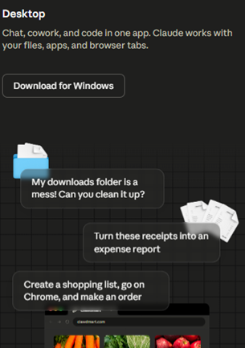
Βήμα 2ο: Εγκατάσταση
Μόλις κατεβάσετε το αρχείο, πατήστε για εκτέλεση. Η διαδικασία είναι σχεδιασμένη ώστε να ολοκληρώνεται αυτόματα, χωρίς να απαιτούνται πολύπλοκες παραμετροποιήσεις ή ειδικές ρυθμίσεις από την πλευρά του χρήστη.
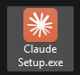
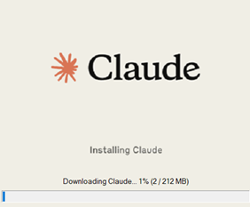
Βήμα 3ο: Εκκίνηση και Ταυτοποίηση
Ανοίξτε την εφαρμογή μέσα από το Μενού Έναρξης (στα Windows). Στην οθόνη υποδοχής, πραγματοποιήστε είσοδο (log in) με τα διαπιστευτήρια του λογαριασμού σας. Εάν δεν διαθέτετε ήδη λογαριασμό, θα χρειαστεί πρώτα να δημιουργήσετε έναν μέσω της διαδικτυακής πλατφόρμας (claude.ai).
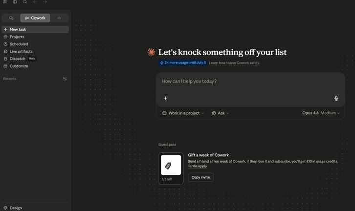
Τα τρία εικονίδια πλοήγησης
Ανοίγοντας την εφαρμογή Claude Desktop, στο πάνω αριστερό μέρος της οθόνης θα παρατηρήσετε τρία κεντρικά εικονίδια πλοήγησης (tabs). Το καθένα ενεργοποιεί ένα εντελώς διαφορετικό περιβάλλον εργασίας, προσαρμοσμένο στις εκάστοτε ανάγκες σας:
1. Chat (Η κλασική λειτουργία Συνομιλίας): Το πρώτο εικονίδιο αντιστοιχεί στο βασικό περιβάλλον αλληλεπίδρασης, παρόμοιο με αυτό της διαδικτυακής έκδοσης. Εδώ εκτελούνται οι παραδοσιακές λειτουργίες παραγωγής περιεχομένου, ερωταπαντήσεων (Q&A) και ανάλυσης δεδομένων. Σε αυτό το tab, το Claude λειτουργεί ως ένας κλασικός ψηφιακός συνομιλητής, χωρίς να παρεμβαίνει στα τοπικά αρχεία του συστήματός σας.
2. Cowork (Ο Αυτόνομος Ψηφιακός Βοηθός): Το κεντρικό εικονίδιο αποτελεί την «καρδιά» της desktop εφαρμογής. Ενεργοποιώντας το Cowork, το Claude μετατρέπεται από απλός συνομιλητής σε ενεργό συνεργάτη. Θα μιλήσουμε γι΄αυτό στη συνέχεια αναλυτικότερα.
3. Code (Το Περιβάλλον Προγραμματισμού): Το τρίτο εικονίδιο ανοίγει έναν εξειδικευμένο χώρο εργασίας σχεδιασμένο αποκλειστικά για την ανάπτυξη λογισμικού. Βελτιστοποιεί την παραγωγή, τον έλεγχο (debugging) και την ανάλυση κώδικα, παρέχοντας μια διεπαφή απαλλαγμένη από περιττούς περισπασμούς, ιδανική για τεχνικές εργασίες και προγραμματιστικά projects.
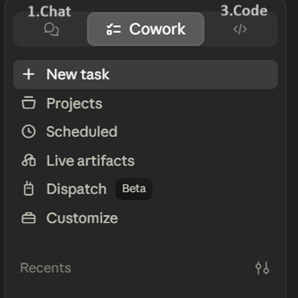
Ο Μηχανισμός Λειτουργίας του Cowork
Το Cowork αποτελεί την πιο προηγμένη λειτουργία της εφαρμογής Claude Desktop, καθώς μεταβάλλει ριζικά τον ρόλο του μοντέλου από έναν παθητικό συνομιλητή σε έναν πλήρως αυτόνομο ψηφιακό βοηθό. Ουσιαστικά, του εκχωρεί τη δυνατότητα να «εργαστεί» απευθείας μέσα στο δικό σας υπολογιστικό περιβάλλον και να διεκπεραιώσει σύνθετες διεργασίες για λογαριασμό σας.
Στην πράξη, η λειτουργία του βασίζεται σε μια εξαιρετικά αποδοτική διαδικασία ανάθεσης. Αρκεί να του υποδείξετε έναν τοπικό φάκελο και να περιγράψετε το επιθυμητό παραδοτέο.
Από εκείνο το σημείο, το σύστημα αναλαμβάνει δράση εντελώς αυτόνομα
- Ανοίγει και διαβάζει τα απαραίτητα αρχεία του φακέλου.
- Επεξεργάζεται τον όγκο των δεδομένων.
- Αναπτύσσει και εκτελεί κώδικα στο παρασκήνιο (εφόσον η εργασία το απαιτεί).
- Συνθέτει το τελικό αποτέλεσμα και το αποθηκεύει απευθείας στο τοπικό σας σύστημα.
Κατά τη διάρκεια αυτής της διαδικασίας, έχετε την πλήρη ελευθερία είτε να παρακολουθείτε την πρόοδο των βημάτων σε πραγματικό χρόνο, είτε να αφήσετε το πρόγραμμα να εργάζεται στο παρασκήνιο και να επιστρέψετε απλώς για να παραλάβετε το ολοκληρωμένο έργο.
Σε ποιους απευθύνεται
Αν και τεχνολογικά μοιράζεται την ίδια ισχυρή αρχιτεκτονική με το Claude Code (τον χώρο εργασίας για προγραμματιστές), το Cowork είναι σχεδιασμένο με γνώμονα την απόλυτη ευχρηστία. Παρακάμπτει την ανάγκη για χρήση γραμμής εντολών (terminal) και δεν προϋποθέτει απολύτως καμία τεχνική γνώση συγγραφής κώδικα. Έχει δημιουργηθεί αποκλειστικά για τους knowledge workers (εργάτες της γνώσης), τους επαγγελματίες δηλαδή των οποίων η καθημερινότητα περιστρέφεται γύρω από τη διαχείριση εγγράφων, τη σύνταξη αναφορών, την ανάλυση δεδομένων, τη δημιουργία παρουσιάσεων και την ευρύτερη οργάνωση της πληροφορίας.
Διαχείριση Αρχείων & Εργασιών στο Desktop: Ο Φάκελος Εργασίας (Working Folder)
Η έναρξη οποιασδήποτε αυτόνομης διαδικασίας στο περιβάλλον του Cowork προϋποθέτει τον σαφή καθορισμό του πεδίου δράσης του ψηφιακού βοηθού. Η αρχική αυτή παραμετροποίηση επιτυγχάνεται μέσω της επιλογής ενός τοπικού φακέλου, η οποία πραγματοποιείται από το ειδικό πεδίο επιλογής στο κάτω μέρος της οθόνης του Cowork.
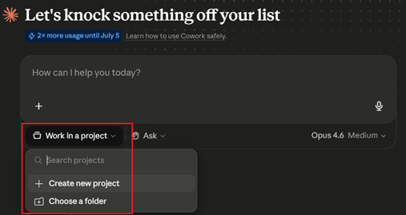
Το αυστηρό όριο πρόσβασης
Αυτός ο Φάκελος Εργασίας (Working Folder) λειτουργεί ως το αυστηρό και απαραίτητο όριο πρόσβασης για το Claude. Το μοντέλο διαθέτει το δικαίωμα να αναγνώσει υφιστάμενα δεδομένα και να εγγράψει νέα αρχεία αποκλειστικά και μόνο εντός των ορίων του συγκεκριμένου καταλόγου. Οποιοδήποτε άλλο στοιχείο ή φάκελος του υπολογιστή σας παραμένει πλήρως απομονωμένο και απροσπέλαστο, διασφαλίζοντας την ιδιωτικότητα και την ακεραιότητα του συστήματός σας.
Βέλτιστη Πρακτική Ασφάλειας και Οργάνωσης: Για τη μέγιστη ασφάλεια και την ορθότερη διαχείριση της πληροφορίας, κρίνεται απαραίτητο να δημιουργείτε έναν ξεχωριστό, αφιερωμένο φάκελο για κάθε διακριτή εργασία ή project που αναθέτετε. Συνακόλουθα, θα πρέπει να αποφεύγεται αυστηρά η επιλογή κεντρικών ή ριζικών καταλόγων του συστήματος (όπως για παράδειγμα ολόκληρος ο σκληρός δίσκος C:\), προκειμένου να διατηρείται ο απόλυτος έλεγχος των παραγόμενων αρχείων και να διευκολύνεται η μετέπειτα αναζήτησή τους.
Επίπεδα Αυτονομίας και Έλεγχος Εκτέλεσης
Ακριβώς δίπλα από την επιλογή του φακέλου εργασίας, το περιβάλλον του Cowork σας παρέχει τη δυνατότητα να ρυθμίσετε τον βαθμό ελευθερίας που παραχωρείτε στο Claude, μέσω ενός αναπτυσσόμενου μενού. Αυτή η ρύθμιση καθορίζει το πώς το μοντέλο θα διαχειρίζεται τις παρεμβατικές ενέργειες στον υπολογιστή σας (όπως η δημιουργία, η τροποποίηση ή η διαγραφή αρχείων). Οι διαθέσιμες επιλογές είναι δύο και εξυπηρετούν εντελώς διαφορετικά σενάρια και στάδια εξοικείωσης με το εργαλείο:
1. Ask before acting (Εκτέλεση κατόπιν έγκρισης)
Πώς λειτουργεί: Σε αυτή τη λειτουργία, το Claude θα αναλύσει το αίτημά σας και θα σχεδιάσει τα βήματα, αλλά θα κάνει παύση πριν εκτελέσει οποιαδήποτε ενέργεια στον φάκελό σας. Θα σας παρουσιάσει τι ακριβώς σκοπεύει να κάνει και θα περιμένει τη ρητή σας έγκριση για να προχωρήσει.
Πότε να το χρησιμοποιείτε: Αποτελεί τη βέλτιστη πρακτική και συνιστάται ανεπιφύλακτα όταν δοκιμάζετε μια νέα ροή εργασίας, όταν διαχειρίζεστε ευαίσθητα εταιρικά δεδομένα ή όταν απλώς επιθυμείτε να διατηρείτε τον απόλυτο, βήμα-προς-βήμα έλεγχο της διαδικασίας.
2. Act without asking (Πλήρως αυτόνομη εκτέλεση)
Πώς λειτουργεί: Επιλέγοντας αυτή τη ρύθμιση, αφαιρείτε τα ενδιάμεσα «φρένα» ασφαλείας. Το Claude θα διαβάσει την εντολή σας και θα εκτελέσει απρόσκοπτα ολόκληρη την αλυσίδα των απαιτούμενων ενεργειών στο παρασκήνιο, παραδίδοντάς σας απευθείας το τελικό αποτέλεσμα χωρίς να διακόψει για να ζητήσει άδεια.
Πότε να το χρησιμοποιείτε: Είναι η ιδανική επιλογή για τυποποιημένες, επαναλαμβανόμενες εργασίες για τις οποίες το μοντέλο έχει ήδη αποδείξει ότι παράγει ακριβή αποτελέσματα. Επιτρέπει τη μέγιστη εξοικονόμηση χρόνου, καθώς μπορείτε να αναθέσετε την εργασία και να απομακρυνθείτε από την οθόνη όσο το σύστημα εργάζεται.
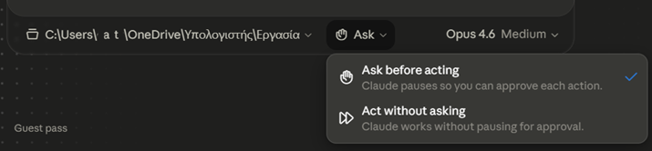
Ποιο επίπεδο αυτονομίας ταιριάζει;
Επιλέξτε το κατάλληλο επίπεδο αυτονομίας για κάθε σενάριο:
Δοκιμάζετε για πρώτη φορά μια νέα ροή εργασίας με ευαίσθητα εταιρικά δεδομένα →
Τυποποιημένη, επαναλαμβανόμενη εργασία στην οποία το μοντέλο έχει ήδη αποδείξει ότι παράγει ακριβή αποτελέσματα →
Θέλετε να διατηρείτε απόλυτο, βήμα-προς-βήμα έλεγχο της διαδικασίας →
Πρακτικά Σενάρια Εφαρμογής του Cowork
Για να γίνει απολύτως κατανοητή η μετασχηματιστική δύναμη του Cowork, θα εξετάσουμε ορισμένα καθημερινά σενάρια που απασχολούν κάθε επαγγελματία. Σε αυτά τα παραδείγματα, ο αυτόνομος βοηθός αναλαμβάνει εργασίες που, υπό κανονικές συνθήκες, θα απαιτούσαν ώρες χειροκίνητης προσπάθειας.
Σενάριο 1: Αυτοματοποιημένη Οργάνωση Φακέλων (File Management)
Η διαχείριση ενός φακέλου που έχει γεμίσει με εκατοντάδες ανομοιογενή αρχεία σε βάθος χρόνου, είναι μια από τις πιο εξαντλητικές εργασίες ρουτίνας. Το Cowork μπορεί να αναλάβει τον ρόλο του διαχειριστή συστήματος.
Το Πρόβλημα: Ένας φάκελος με εκατοντάδες αρχεία διαφορετικών τύπων, ονομάτων και ημερομηνιών, χωρίς καμία λογική δομή.
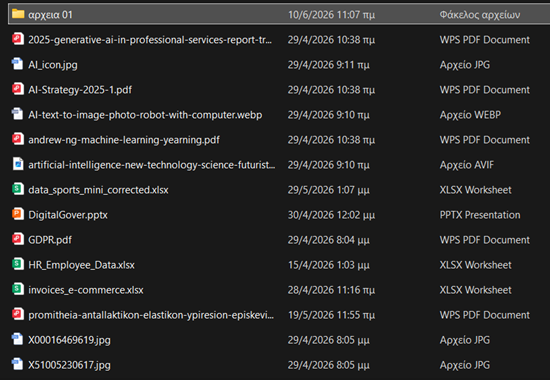
«Οργάνωσε τον φάκελο ταξινομώντας τα αρχεία ανά τύπο (π.χ. Έγγραφα, Εικόνες, Παρουσιάσεις) και, σε δεύτερο επίπεδο, ανά ημερομηνία.»
Η Εκτέλεση στην Πράξη: Το μοντέλο δεν περιορίζεται στο να σας δώσει γραπτές συμβουλές οργάνωσης. Αναλαμβάνει δράση στο παρασκήνιο: σαρώνει ολόκληρο τον φάκελο εργασίας, αναγνωρίζει τις καταλήξεις (file extensions) και τα μεταδεδομένα (metadata) κάθε αρχείου.
Στη συνέχεια, εκτελεί τον απαραίτητο κώδικα για να δημιουργήσει αυτόματα τη νέα δομή υποφακέλων και να μετακινήσει φυσικά το κάθε αρχείο στη σωστή τοποθεσία. Μέσα σε λίγα δευτερόλεπτα, το ψηφιακό χάος μετατρέπεται σε ένα απόλυτα ταξινομημένο περιβάλλον, με μηδενική δική σας προσπάθεια.
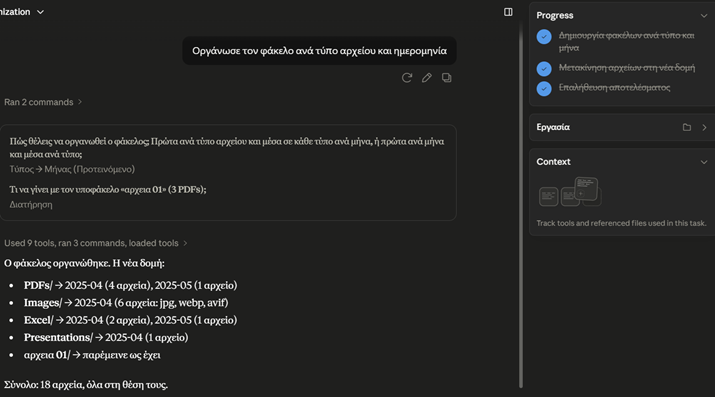
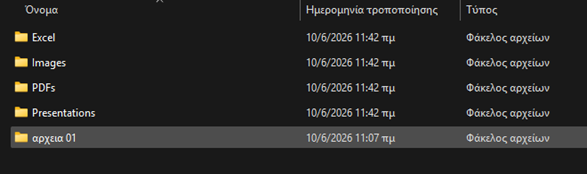
Σενάριο 2: Μαζική Μετονομασία Αρχείων
Ένα σύνηθες πρόβλημα μετά τη λήψη φωτογραφιών, τη μεταφορά δεδομένων από κινητές συσκευές ή τη συγκέντρωση υλικού από συνεργάτες, είναι η άναρχη ονοματολογία των αρχείων (π.χ. IMG_8472.jpg, scan_new_final.png). Αυτή η έλλειψη δομής καθιστά σχεδόν αδύνατη τη γρήγορη αναζήτηση και την ταξινόμηση.
Το Πρόβλημα: Δεκάδες ή εκατοντάδες αρχεία εικόνων με τυχαία, μη περιγραφικά ονόματα, τα οποία πρέπει να μετονομαστούν ένα προς ένα για να ενταχθούν σε ένα επαγγελματικό σύστημα αρχειοθέτησης.
«Μετονόμασε όλες τις εικόνες του φακέλου εφαρμόζοντας αυστηρά τη μορφή "ΕΕΕΕ-ΜΜ-ΗΗ_τίτλος"»
Η Εκτέλεση στην Πράξη: Αντί να αναλώνεστε κάνοντας δεξί κλικ και «Μετονομασία» σε κάθε αρχείο ξεχωριστά, το Cowork αυτοματοποιεί πλήρως τη διαδικασία. Σαρώνει τον φάκελο, εξάγει τα κρυφά μεταδεδομένα (metadata/EXIF) κάθε εικόνας για να βρει την ακριβή ημερομηνία λήψης, και εφαρμόζει μαζικά τον νέο κανόνα ονοματολογίας. Μια εξαιρετικά μονότονη και επιρρεπής σε ανθρώπινα λάθη διαδικασία ολοκληρώνεται αλάνθαστα σε κλάσματα του δευτερολέπτου.
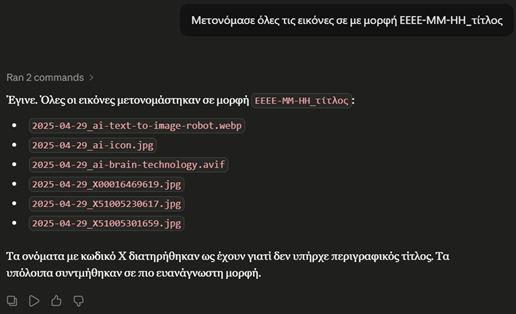
Πρακτικά Σενάρια Εφαρμογής του Cowork — συνέχεια
Σενάριο 3: Αυτοματοποιημένη Ανάλυση Δεδομένων και Οπτικοποίηση (Data Visualization)
Στο σύγχρονο επιχειρηματικό περιβάλλον, η μετατροπή ακατέργαστων δεδομένων σε οπτικές αναφορές απαιτεί συχνά τη χρήση εξειδικευμένων εργαλείων (όπως το Excel ή το PowerBI) και αρκετό χρόνο για υπολογισμούς και μορφοποίηση. Το Cowork απλοποιεί αυτή τη διαδικασία δραματικά.
Το Πρόβλημα: Έχετε στη διάθεσή σας ένα λογιστικό φύλλο με ανεπεξέργαστα δεδομένα (π.χ. το μητρώο προσωπικού της εταιρείας) και χρειάζεστε άμεσα ένα επαγγελματικό γράφημα για μια αναφορά ή παρουσίαση, χωρίς να αναλωθείτε σε χειροκίνητη ομαδοποίηση στηλών και γραμμών.
«Εντόπισε το αρχείο με όνομα "HR_Employee_Data". Θέλω να δημιουργήσεις ένα pie chart με τίτλο "Κατανομή προσωπικού ανά θέση εργασίας", το οποίο να παρουσιάζει το ποσοστό των εργαζομένων που ανήκουν σε κάθε τμήμα.»
Η Εκτέλεση στην Πράξη: Το Cowork δεν σας καθοδηγεί απλώς στο πώς να το φτιάξετε μόνοι σας. Σαρώνει τον φάκελο εργασίας και εντοπίζει το σωστό αρχείο. Στη συνέχεια, διαβάζει τα δεδομένα, πραγματοποιεί τους απαραίτητους υπολογισμούς για την εξαγωγή των ποσοστών και, εκτελώντας κώδικα στο παρασκήνιο, παράγει και προβάλλει απευθείας το ζητούμενο γράφημα στην οθόνη σας. Μάλιστα, όπως φαίνεται και στη διεπαφή, καταγράφει με απόλυτη διαφάνεια τα βήματα που ακολούθησε (π.χ. "Ανάγνωση δεδομένων", "Δημιουργία pie chart").
Σενάριο 4: Σημασιολογική Ανάλυση και Έξυπνη Μετονομασία Αρχείων (Content-Aware Renaming)
Η συσσώρευση αρχείων με ασαφή ή εργοστασιακά ονόματα (όπως unknown.pdf, document_1.pdf ή scan_0821.pdf) αποτελεί ένα συχνό πρόβλημα που καθιστά την εύρεση πληροφοριών αδύνατη χωρίς το χειροκίνητο άνοιγμα κάθε εγγράφου. Το Cowork μπορεί να «διαβάσει» και να κατανοήσει το περιεχόμενο, αναλαμβάνοντας την έξυπνη αρχειοθέτησή του.
Το Πρόβλημα: Ύπαρξη «ανώνυμων» ή κακώς ονοματισμένων ψηφιακών εγγράφων στον φάκελο εργασίας, τα οποία απαιτούν χρόνο για να ελεγχθούν και να ταξινομηθούν χειροκίνητα.
«Εντόπισε το αρχείο "unknown.pdf" στον φάκελο εργασίας, ανάγνωσε ολόκληρο το περιεχόμενό του και μετονόμασέ το χρησιμοποιώντας έναν σύντομο και απόλυτα περιγραφικό τίτλο, ο οποίος να αντικατοπτρίζει το κύριο θέμα του εγγράφου.»
Η Εκτέλεση στην Πράξη: Στο σενάριο αυτό, ο αυτόνομος βοηθός αναδεικνύει την ικανότητά του στη σημασιολογική κατανόηση (semantic understanding) κειμένου. Το Cowork ανοίγει το αρχείο PDF, αναλύει τη δομή, τους τίτλους και το περιεχόμενό του (ακόμα και αν πρόκειται για πολυσέλιδη τεχνική αναφορά ή σύμβαση) και εξάγει την κεντρική ιδέα. Στη συνέχεια, αντικαθιστά το ασαφές όνομα unknown.pdf με έναν επαγγελματικό τίτλο. Με τον τρόπο αυτό, η πληροφορία γίνεται άμεσα αναγνωρίσιμη στο σύστημα αρχείων, χωρίς να χρειαστεί να αφιερώσετε πολύ χρόνο στην ανάγνωση του εγγράφου.
Σημαντική Επισήμανση: Ο Κανόνας του Ανθρώπινου Ελέγχου (Human-in-the-Loop)
Παρότι το Claude Cowork αποτελεί ένα εξαιρετικά ισχυρό εργαλείο αυτοματοποίησης που εκτελεί πολύπλοκες εργασίες σε δευτερόλεπτα, ο τελικός έλεγχος των παραδοτέων (quality assurance) ανήκει πάντα αποκλειστικά σε εσάς. Όσο προηγμένη και αν είναι η Τεχνητή Νοημοσύνη, παραμένει ένα πιθανολογικό σύστημα. Ενδέχεται να παρερμηνεύσει μια διφορούμενη εντολή, να παραλείψει κάποια δεδομένα σε ένα γράφημα ή να κατηγοριοποιήσει λανθασμένα ένα έγγραφο κατά τη μετονομασία του. Επομένως, καθίσταται απαράβατος επαγγελματικός κανόνας να ελέγχετε πάντα το τελικό αποτέλεσμα στον φάκελο εργασίας σας, πριν αξιοποιήσετε τα αρχεία ή τα μοιραστείτε με τους συνεργάτες σας.
Να θυμάστε: Ο ψηφιακός βοηθός αναλαμβάνει την εκτέλεση, αλλά εσείς φέρετε πάντα την ευθύνη της τελικής έγκρισης.
Ολοκληρώνοντας την περιήγηση στο Cowork
Ολοκληρώνοντας την περιήγηση στο περιβάλλον του Cowork, γίνεται σαφές ότι η συγκεκριμένη λειτουργία αντιπροσωπεύει μια ουσιαστική αλλαγή παραδείγματος για την επαγγελματική παραγωγικότητα. Το Claude παύει να είναι απλώς ένας ευφυής συνομιλητής σε μια απομονωμένη καρτέλα του browser και μετατρέπεται σε έναν ενεργό, εκτελεστικό συνεργάτη που επιχειρεί απευθείας στο λειτουργικό σας σύστημα.
Όπως αποδείχθηκε μέσα από τα πρακτικά σενάρια, από την οργανωτική αναδιάρθρωση φακέλων και τη σημασιολογική μετονομασία εγγράφων, μέχρι την άμεση οπτικοποίηση πολύπλοκων δεδομένων, εξαντλητικές εργασίες ρουτίνας διεκπεραιώνονται πλέον αυτόνομα, σε ελάχιστο χρόνο και χωρίς να απαιτούνται γνώσεις προγραμματισμού. Η ενσωμάτωση αυτού του επιπέδου αυτοματοποίησης στην καθημερινή ροή εργασίας απελευθερώνει πολύτιμο χρόνο για στρατηγική σκέψη. Διατηρώντας πάντα τον ρόλο του τελικού ελεγκτή (human-in-the-loop), ο σύγχρονος επαγγελματίας αναβαθμίζει τον ρόλο του από απλό εκτελεστή μικρο-εργασιών σε διαχειριστή ψηφιακών συστημάτων.
Claude in Chrome & Claude in Excel
A. Claude in Chrome
Η επέκταση (extension) του Claude για τον Google Chrome μετατρέπει τον περιηγητή σας σε ένα προηγμένο, διαδραστικό εργαλείο έρευνας και εκτέλεσης εργασιών. Δεν πρόκειται απλώς για ένα συμβατικό chatbot ενσωματωμένο σε ένα πλευρικό παράθυρο (sidebar). Το Claude φέρνει την Τεχνητή Νοημοσύνη απευθείας στο περιβάλλον εργασίας σας, αποκτώντας τη δυνατότητα να «βλέπει» και να αλληλεπιδρά με την ιστοσελίδα που επισκέπτεστε.
Πρακτικά, αυτό σημαίνει ότι καταργείται πλήρως η χρονοβόρα διαδικασία της συνεχούς αντιγραφής και επικόλλησης (copy-paste) πληροφοριών μεταξύ της πλατφόρμας και του browser. Αντί να μεταφέρετε εσείς τα δεδομένα στο Claude, το μοντέλο έρχεται σε εσάς και δρα εκ μέρους σας, προσφέροντας δύο βασικούς πυλώνες λειτουργίας:
Οι δύο πυλώνες λειτουργίας
Σημασιολογική Ανάλυση και Έρευνα
Διαβάζει άμεσα το περιεχόμενο της τρέχουσας σελίδας, επιτρέποντάς σας να ζητήσετε δομημένες συνόψεις, να εξαγάγετε συγκεκριμένα δεδομένα και να αναλύσετε εκτενή άρθρα.
Αυτόνομη Πλοήγηση και Εκτέλεση
Διαθέτει την ικανότητα να αλληλεπιδρά ενεργά με τα στοιχεία της διεπαφής (UI). Μπορεί να πατάει κουμπιά, να συμπληρώνει φόρμες και να διεκπεραιώνει σύνθετες, πολυβηματικές εργασίες που εκτείνονται σε πολλαπλά tabs, εξασφαλίζοντας πάντα προηγουμένως τη ρητή δική σας έγκριση.
Ουσιαστικά, ο ψηφιακός βοηθός ενσωματώνεται πλήρως στην καθημερινή σας πλοήγηση, «κατανοώντας» όχι μόνο το τι διαβάζετε, αλλά και το τι προσπαθείτε να επιτύχετε στον ιστό.
Εγκατάσταση βήμα προς βήμα
Βήμα 1: Η διαδικασία λήψης της επέκτασης μπορεί να γίνει με 2 τρόπους. Πρώτον, ξεκινώντας, μέσα από το ήδη γνώριμο περιβάλλον του λογαριασμού σας στο Claude, ακολουθώντας την εξής διαδρομή:
Στο κάτω μέρος της αριστερής πλευρικής μπάρας ελέγχου (sidebar), εντοπίστε και κάντε κλικ στο ειδικό εικονίδιο λήψης (Get apps and extensions), το οποίο βρίσκεται δίπλα στα στοιχεία του προφίλ σας.
Η ενέργεια αυτή θα σας ανακατευθύνει αυτόματα στην επίσημη σελίδα λήψεων της πλατφόρμας (https://claude.ai/downloads). Στη νέα οθόνη, πλοηγηθείτε στην ενότητα με την ένδειξη Chrome. Εκεί, κάνετε κλικ στην επιλογή «Install».
Προσθήκη από το Chrome Web Store
Αμέσως μετά θα οδηγηθείτε στην επόμενη σελίδα στο chrome web store, όπου εκεί θα κάνετε κλικ στο κουμπί «Προσθήκη».
Στη συνέχεια, θα σας εμφανιστεί ένα παράθυρο, πατήστε «Προσθήκη επέκτασης».
Εξουσιοδότηση (Authorize)
Έπειτα, θα εμφανιστεί ένα παράθυρο ασφαλείας όπου καλείστε να εγκρίνετε τη σύνδεση. Κάνοντας κλικ στο κουμπί «Authorize» (Εξουσιοδότηση), επιτρέπετε στην επέκταση Claude for Chrome να διασυνδεθεί με τον προσωπικό σας λογαριασμό στην Anthropic. Με αυτή την ενέργεια, παραχωρείτε στο εργαλείο τα απαραίτητα δικαιώματα πρόσβασης, προκειμένου να μπορεί να διαβάζει τα στοιχεία του προφίλ σας και να διαχειρίζεται (δημιουργεί, συνεχίζει ή διαγράφει) τις συνομιλίες σας απευθείας μέσα από τον browser.
Η επέκταση είναι πλέον εγκατεστημένη στον browser σας. Την επέκταση Claude μπορείτε να την βρείτε δεξιά δίπλα από την γραμμή αναζήτησης με το εικονίδιο πάζλ, όπου μπορεί να κάνετε κλικ στην πινέζα, ώστε να είναι ορατή η συγκεκριμένη επέκταση πάντα.
Ο δεύτερος τρόπος εγκατάστασης
Ο δεύτερος τρόπος εγκατάστασης του Claude for Chrome είναι να επισκεφθείτε το Web Store από τον browser Chrome. Εκεί μπορείτε να αναζητήσετε την επέκταση Claude.
Ο τρόπος εγκατάστασης στη συνέχεια είναι ίδιος, όπως και στην πρώτη περίπτωση.
Έτοιμο για την περιήγησή σας
Πλέον, το Claude for Chrome είναι έτοιμο για να σας βοηθήσει στην περιήγησή σας στο διαδίκτυο.
Επίπεδα Εξουσιοδότησης
Κατά την εκκίνηση του Claude in Chrome, στο κάτω μέρος του πεδίου εισαγωγής κειμένου (prompt), θα παρατηρήσετε ένα αναπτυσσόμενο μενού ελέγχου. Μέσω αυτού, καθορίζετε τον βαθμό αυτονομίας του ψηφιακού βοηθού κατά την περιήγησή σας (όπως ακριβώς είδαμε νωρίτερα και στο Claude Cowork). Οι διαθέσιμες επιλογές είναι οι εξής:
Ask before acting (Εκτέλεση κατόπιν έγκρισης): Στην ασφαλέστερη λειτουργία του, το Claude αναλύει το αίτημά σας, σχεδιάζει τα απαιτούμενα βήματα και σταματά, αναμένοντας τη ρητή σας έγκριση πριν προβεί σε οποιαδήποτε ενέργεια στη σελίδα. Αποτελεί τη συνιστώμενη πρακτική για νέους χρήστες ή κατά τη δοκιμή νέων διαδικασιών.
Always allow actions on this site (Μόνιμη εξουσιοδότηση ανά τομέα): Η συγκεκριμένη ρύθμιση εκχωρεί στο μοντέλο το δικαίωμα να επιχειρεί αυτόνομα, χωρίς ενδιάμεσες ερωτήσεις επιβεβαίωσης, στο συγκεκριμένο domain (π.χ. στο εσωτερικό σύστημα του οργανισμού σας). Η επιλογή αυτή πρέπει να ενεργοποιείται με φειδώ και αποκλειστικά σε απολύτως έμπιστα περιβάλλοντα (trusted sites).
Δικλείδα Ασφαλείας: Ανεξαρτήτως του επιλεγμένου τρόπου λειτουργίας, ο αλγόριθμος είναι σχεδιασμένος ώστε να αναγνωρίζει ενέργειες υψηλού ρίσκου (όπως η εκτέλεση οικονομικών συναλλαγών, η οριστική δημοσίευση περιεχομένου ή η λήψη εκτελέσιμων αρχείων). Σε αυτές τις περιπτώσεις, το σύστημα θα απαιτήσει πάντα την τελική σας επιβεβαίωση. Ωστόσο, πάντα χρειάζεται προσοχή και έλεγχος από την πλευρά του χρήστη.
Προηγμένες Δυνατότητες του Claude in Chrome
Η ενσωμάτωση του Claude στον περιηγητή μετασχηματίζει τον τρόπο με τον οποίο αλληλεπιδράτε με τον παγκόσμιο ιστό, προσφέροντας ένα ευρύ φάσμα αυτοματοποιήσεων:
Ανάγνωση και Ανάλυση Σελίδων (Page Reading)
Άμεση σύνοψη εκτενών άρθρων, βαθιά κατανόηση της δομής του περιεχομένου και εξαγωγή στοχευμένων δεδομένων.
Συνδυαστική Ανάλυση Πολλαπλών Καρτελών (Multi-tab Operations)
Ομαδοποιώντας διαφορετικές καρτέλες (tabs) εντός του χώρου ελέγχου του Claude, το μοντέλο αποκτά «πανοραμική» όραση, επιτρέποντάς του να αναλύει και να συνθέτει δεδομένα από πολλαπλές πηγές ταυτόχρονα.
Αυτόματη Συμπλήρωση Φορμών (Form Filling)
Αναλαμβάνει την κοπιαστική και επαναλαμβανόμενη διαδικασία καταχώρισης δεδομένων σε ψηφιακές φόρμες με απόλυτη ακρίβεια.
Έξυπνη Πλοήγηση (Smart Navigation)
Σε αναγνωρισμένα, ευρέως χρησιμοποιούμενα ψηφιακά περιβάλλοντα (όπως τα Gmail, Google Calendar, Slack, Google Docs και GitHub), το Claude κατανοεί εγγενώς την αρχιτεκτονική της διεπαφής. Πλοηγείται και εκτελεί ενέργειες αυτόνομα, χωρίς να απαιτεί καθοδήγηση βήμα προς βήμα.
Προγραμματισμένες Εργασίες (Scheduled Tasks)
Δυνατότητα παραμετροποίησης επαναλαμβανόμενων διαδικασιών, οι οποίες εκτελούνται πλήρως αυτοματοποιημένα βάσει προκαθορισμένου χρονοδιαγράμματος.
Συστάσεις ασφαλείας:
- Ξεκινήστε με sites που εμπιστεύεστε
- Ελέγχετε πάντα τα πλάνα πριν τα εγκρίνετε
- Αποφεύγετε sites με user-generated content από άγνωστες πηγές
- Μη δίνετε πρόσβαση σε sites όπου είστε συνδεδεμένοι με ευαίσθητους λογαριασμούς
Πρακτικό παράδειγμα
«Ψάξε στη ΔΙΑΥΓΕΙΑ αποφάσεις του Δήμου Αθηναίων από τον τελευταίο μήνα που αφορούν ανάθεση υπηρεσιών ή προμήθειες. Φτιάξε μου πίνακα με: ΑΔΑ, Θέμα, Ημερομηνία και Ποσό.»
Σημαντική Επισήμανση κατά την Εκτέλεση: Από τη στιγμή που το Claude αναλαμβάνει δράση, θα παρατηρήσετε ότι το περιβάλλον του περιηγητή μπροστά σας αρχίζει να κινείται, να κάνει κύλιση (scroll) και να επιλέγει πεδία πλήρως αυτόνομα. Είναι κρίσιμο να μην αλληλεπιδράσετε καθόλου με τη σελίδα (να μην κάνετε κλικ, ούτε να πληκτρολογήσετε κάτι) όσο ο ψηφιακός βοηθός εργάζεται, καθώς οποιαδήποτε ανθρώπινη παρέμβαση ενδέχεται να διακόψει τη ροή των ενεργειών του και να ακυρώσει τη διαδικασία.
Όσο ο browser «κινείται» μόνος του…
Το Claude in Chrome εκτελεί αυτόνομα μια πολυβηματική εργασία και ο browser «κινείται» μόνος του. Τι πρέπει να κάνετε;
Δείγματα αποτελεσμάτων
Εξαγωγή των αποτελεσμάτων σε Excel
B. Claude in Excel
Το Claude for Excel αποτελεί το επίσημο πρόσθετο (add-in) της Anthropic, ειδικά σχεδιασμένο για να γεφυρώσει την αναλυτική ισχύ της Τεχνητής Νοημοσύνης με το περιβάλλον του Microsoft Excel. Κατά την εγκατάστασή του, δημιουργείται ένα ενσωματωμένο πλευρικό παράθυρο ελέγχου (sidebar) απευθείας μέσα στο λογιστικό σας φύλλο. Η σημαντικότερη καινοτομία αυτού του εργαλείου είναι ότι σας επιτρέπει να αλληλεπιδράτε με τα δεδομένα σας χρησιμοποιώντας απλή, φυσική γλώσσα, εκμηδενίζοντας την ανάγκη για συγγραφή και αποσφαλμάτωση περίπλοκων μαθηματικών συναρτήσεων.
Διαδικασία Εγκατάστασης (Βήμα προς Βήμα)
Η λήψη και εγκατάσταση της επέκτασης πραγματοποιείται με απόλυτη ασφάλεια, ξεκινώντας μέσα από το γνώριμο περιβάλλον του λογαριασμού σας στο Claude:
- Get apps and extensions Στο κάτω μέρος της αριστερής πλευρικής μπάρας πλοήγησης (sidebar), εντοπίστε και κάντε κλικ στο ειδικό εικονίδιο λήψης εφαρμογών (Get apps and extensions), το οποίο βρίσκεται ακριβώς δίπλα από τα στοιχεία του προφίλ σας.
- Σελίδα λήψεων Η ενέργεια αυτή θα σας ανακατευθύνει αυτόματα στην επίσημη σελίδα λήψεων της πλατφόρμας (https://claude.ai/downloads).
- Install για Excel Εκεί θα βρείτε τη λίστα με τις διαθέσιμες διασυνδέσεις. Εντοπίστε την επιλογή για το Excel και κάντε κλικ στο διπλανό κουμπί Install (Εγκατάσταση) για να προσθέσετε το εργαλείο στο λογισμικό σας.
Μετάβαση στο Microsoft 365
Στη συνέχεια επιλέγεται το Microsoft 365 και θα οδηγηθείτε στο excel cloud της Microsoft.
Η επιλογή Claude μέσα στο Excel
Εδώ πλέον μπορείτε να δημιουργήσετε ένα νέο έγγραφο ή να εισάγετε δικά σας αρχεία.
Δεξιά στο παράθυρο του Excel θα δείτε το εικονίδιο με τις 3 τελείες (…). Κάνοντας κλικ στο κάτω μέρος του πτυσσόμενου παραθύρου θα δείτε την επιλογή Claude.
Σύνδεση του λογαριασμού σας
Στη συνέχεια, θα δείτε δεξιά σας ένα νέο παράθυρο, στο οποίο θα πρέπει να πατήσετε «Continue in browser», ώστε να συνδεθεί ο λογαριασμός σας.
Έτοιμο για χρήση
Μετά την επιβεβαίωση και εξουσιοδότηση που δώσατε στο Claude, είναι πλέον έτοιμο για χρήση.
Πρακτικό παράδειγμα
«Δημιούργησε ένα νέο sheet "Σύνοψη" με πίνακα που δείχνει: συνολικές πωλήσεις ανά Μάρκα, πλήθος παραγγελιών ανά Μάρκα και μέση τιμή παραγγελίας ανά Μάρκα. Χρησιμοποίησε formulas, όχι στατικές τιμές.»
«Φτιάξε ένα γράφημα στηλών που δείχνει τις συνολικές πωλήσεις (στήλη Σύνολο) ανά Πόλη. Πρόσθεσε τίτλο "Πωλήσεις ανά Πόλη" και conditional formatting στη στήλη Σύνολο: πράσινο αν είναι πάνω από 200€, κόκκινο αν είναι κάτω από 100€.»
Σωστό ή Λάθος;
Σωστό ή Λάθος: Για να χρησιμοποιήσετε το Claude for Excel, πρέπει να γνωρίζετε να γράφετε μόνοι σας περίπλοκες μαθηματικές συναρτήσεις (formulas).
Σύνοψη: Η Δύναμη της Άμεσης Ενσωμάτωσης
Η ενσωμάτωση του Claude στον Google Chrome επαναπροσδιορίζει ριζικά την εμπειρία της διαδικτυακής περιήγησης, μετατρέποντας τον browser από ένα απλό εργαλείο προβολής πληροφοριών σε έναν ενεργό ψηφιακό ερευνητή. Η πραγματική του δύναμη έγκειται στην ικανότητά του να "κατανοεί" σημασιολογικά το περιβάλλον στο οποίο βρίσκεστε, επιτρέποντάς του να αναλύει άμεσα εκτενή κείμενα, να διαχειρίζεται συνδυαστικά πολλαπλές καρτέλες (tabs) και να εκτελεί αυτόνομα, αλλά πάντα υπό την έγκρισή σας, διαδραστικές ενέργειες, όπως η πλοήγηση και η συμπλήρωση φορμών. Αυτή η άμεση διασύνδεση εξαλείφει πλήρως την ανάγκη συνεχούς εναλλαγής εφαρμογών (context switching), επιταχύνοντας την άντληση και την επεξεργασία δεδομένων απευθείας στην πηγή τους.
Αντίστοιχα, το Claude for Excel επιφέρει μια μετασχηματιστική αλλαγή στη διαχείριση και ανάλυση δεδομένων, εκδημοκρατίζοντας τις πιο προηγμένες δυνατότητες των λογιστικών φύλλων. Η προστιθέμενη αξία του εργαλείου συνοψίζεται στη άμεση μετάφραση της φυσικής γλώσσας σε πολύπλοκες υπολογιστικές συναρτήσεις (formulas) και μαζικές αυτοματοποιήσεις. Αντί ο χρήστης να αναλώνεται στον χειροκίνητο καθαρισμό δεδομένων, τον εντοπισμό συντακτικών λαθών και τον σχεδιασμό συγκεντρωτικών πινάκων, το μοντέλο αναλαμβάνει εξ ολοκλήρου το τεχνικό βάρος. Έτσι, το Excel εξελίσσεται από ένα στατικό λογισμικό καταχώρισης σε ένα δυναμικό, ευφυές περιβάλλον εργασίας, όπου η εξαγωγή κρίσιμων συμπερασμάτων και η οπτικοποίηση μεγάλου όγκου πληροφοριών πραγματοποιούνται ακαριαία.
Σύνοψη — το προσωπικό σου σύστημα παραγωγικότητας
Φτάνοντας στην ολοκλήρωση αυτού του οδηγού, είναι πλέον σαφές ότι το Claude δεν είναι απλώς ένα έξυπνο chatbot στο οποίο απευθύνετε μεμονωμένες ερωτήσεις. Εάν αξιοποιήσετε στο έπακρο τις δυνατότητες που αναλύθηκαν παραπάνω, το Claude θα μετατραπεί σε έναν ολοκληρωμένο, κεντρικό λειτουργικό σύστημα παραγωγικότητας, απολύτως προσαρμοσμένο στη δική σας επαγγελματική ταυτότητα και καθημερινότητα.
Η πραγματική αξία του ψηφιακού μετασχηματισμού δεν κρύβεται στη χρήση ενός μεμονωμένου εργαλείου, αλλά στη συνέργεια όλων των δυνατοτήτων του.
Ας δούμε πώς συνδυάζονται τα πέντε θεμελιώδη στοιχεία που μάθαμε, για να δημιουργήσουν το απόλυτο, εξατομικευμένο workflow:
Τα πέντε θεμελιώδη στοιχεία
1. Το Πλαίσιο (Projects)
Είναι ο μόνιμος χώρος εργασίας σας. Εδώ βρίσκονται αποθηκευμένα τα αρχεία, οι κανονισμοί και το ιστορικό της εταιρείας σας. Δεν χρειάζεται πλέον να εξηγείτε από την αρχή το περιβάλλον στο οποίο κινείστε.
2. Custom Styles
Έχετε ήδη διδάξει στο μοντέλο το πώς ακριβώς γράφετε. Όταν το Claude παράγει περιεχόμενο, χρησιμοποιεί το δικό σας επαγγελματικό, ακαδημαϊκό ή φιλικό ύφος, διασφαλίζοντας την προσωπική σας σφραγίδα σε κάθε παραδοτέο.
3. Connectors
Δεν αναλώνεστε στο να κατεβάζετε και να ανεβάζετε αρχεία. Μέσω των Connectors, το Claude "βλέπει" απευθείας τα σημερινά σας emails στο Gmail ή τα επικαιροποιημένα δεδομένα στο Google Drive, αντλώντας ζωντανή πληροφορία χωρίς να εγκαταλείψετε την πλατφόρμα.
4. Skills
Για τις επαναλαμβανόμενες εργασίες, δεν γράφετε πια μακροσκελή prompts. Ενεργοποιείτε το έτοιμο Skill (π.χ. «Εβδομαδιαία Αναφορά»), το οποίο λειτουργεί ως αυστηρός οδηγός εκτέλεσης βήμα προς βήμα, μορφοποιώντας το αποτέλεσμα ακριβώς όπως το θέλετε (π.χ. σε έτοιμο αρχείο Word).
5. Memory
Πάνω από όλα αυτά, η Μνήμη του συστήματος καταγράφει αθόρυβα τις μικρές καθημερινές σας προτιμήσεις (π.χ. «πάντα να τονίζεις με bold τα τελικά ποσά»), κάνοντας το σύστημα όλο και πιο διαισθητικό με την πάροδο του χρόνου.
Αντιστοιχίστε τα πέντε στοιχεία
Αντιστοιχίστε κάθε στοιχείο του συστήματος με τον ρόλο του:
Το Απόλυτο Workflow στην Πράξη
Φανταστείτε την έναρξη της εργασιακής σας εβδομάδας. Αντί να ανοίξετε δέκα διαφορετικές καρτέλες (tabs):
- Βήμα 1 Ανοίγετε απλώς το Project «Μηνιαίο Reporting».
- Βήμα 2 Με μία μόνο εντολή στο Claude: «Διάβασε τα τελευταία 5 emails από τον πελάτη (μέσω Connectors) και τα δεδομένα πωλήσεων που έχουμε στα Files του Project.»
- Βήμα 3 «Χρησιμοποιώντας το Skill «Αναφορά Προόδου», συνέταξε το τελικό αρχείο Word, διατηρώντας το αυστηρό εταιρικό Style που έχουμε ορίσει.»
Μέσα σε ελάχιστα δευτερόλεπτα, η Τεχνητή Νοημοσύνη συλλέγει, αναλύει, μορφοποιεί και παραδίδει το τελικό έγγραφο. Εσείς, αξιοποιώντας την εξατομικευμένη Μνήμη του συστήματος, δεν χρειάστηκε να κάνετε καμία διορθωτική παρέμβαση.
Ο Αρχιτέκτονας των Διαδικασιών
Αυτή είναι η ουσία της σύγχρονης παραγωγικότητας. Ο ρόλος του σύγχρονου επαγγελματία αναβαθμίζεται. Παύετε να είστε ο διεκπεραιωτής των μικρών, επαναλαμβανόμενων διοικητικών εργασιών και μετατρέπεστε στον Αρχιτέκτονα των Διαδικασιών. Χρησιμοποιώντας το Claude ως το προσωπικό σας σύστημα παραγωγικότητας, ανακτάτε το πιο πολύτιμο αγαθό: τον χρόνο σας, για να τον αφιερώσετε εκεί που πραγματικά απαιτείται ανθρώπινη κρίση, στρατηγική σκέψη και δημιουργικότητα.
Ανακεφαλαίωση Ενότητας 4
Οι Connectors είναι «ψηφιακές γέφυρες» μεταξύ του Claude και του οικοσυστήματός σας (Google Workspace — Drive, Docs, Gmail, Calendar — Canva, Make). Ενεργοποιούνται από το Customize > Connectors με το «+», μέσω ασφαλών πρωτοκόλλων OAuth — το σύστημα δεν ζητά ποτέ τους κωδικούς σας.
Ο έλεγχος παραμένει στα χέρια σας: άμεση αποσύνδεση με Disconnect και Tool permissions — εργαλεία ανάγνωσης σε «Always allow», εργαλεία εγγραφής/διαγραφής σε «Needs approval».
Τα workflows με Connectors εκτελούν αλληλουχίες ενεργειών με ένα prompt: Πρωινή Προετοιμασία (Gmail), Στρατηγικός Ημερήσιος Προγραμματισμός (Calendar), Έξυπνη Διαχείριση Αλληλογραφίας (email → draft → event) και Αναζήτηση & Σύνοψη (Drive). Οφέλη: εξάλειψη context switching, αυτοματοποίηση ρουτίνας, ασφάλεια και έλεγχος.
Τα Skills είναι «εγχειρίδια λειτουργιών» (SOP) που βασίζονται στο αρχείο SKILL.md: σκοπός, συνθήκες ενεργοποίησης, βήματα, επιθυμητό αποτέλεσμα — όλα σε φυσική γλώσσα, χωρίς κώδικα. Διακρίνονται σε Pre-built (αυτόματα: PDF, Excel, Word, PowerPoint) και Custom (δικά σας, με Code Execution, στα πλάνα Pro/Max/Team/Enterprise).
Projects vs Skills: τα Projects ορίζουν το «Πλαίσιο» (ρόλος, context, βάση γνώσης — μόνο εντός του Project), τα Skills τη «Διαδικασία» (βήματα, κανόνες, format — σε κάθε συνομιλία). Χρυσός κανόνας: ίδιες οδηγίες πάνω από δύο φορές → Skill.
Τρεις τρόποι δημιουργίας Custom Skill: χειροκίνητα (SKILL.md → .zip → upload), «Create with Claude» (περιγραφή σε φυσική γλώσσα) και φόρμα «Write skill instructions» (Skill name, Description, Instructions). Διαχείριση: toggle, Edit, Download, Delete (μη αναστρέψιμο — πρώτα Download).
Το Claude Desktop (Windows) ενοποιεί τα Chat, Cowork και Code και, σε αντίθεση με τον browser, διασυνδέεται άμεσα με τον τοπικό υπολογιστή. Το Cowork εργάζεται αυτόνομα σε έναν Φάκελο Εργασίας (Working Folder) — αυστηρό όριο πρόσβασης — με δύο επίπεδα αυτονομίας: Ask before acting και Act without asking.
Πρακτικά σενάρια Cowork: οργάνωση φακέλων, μαζική μετονομασία (metadata/EXIF), ανάλυση δεδομένων και οπτικοποίηση, σημασιολογική μετονομασία εγγράφων. Απαράβατος κανόνας: Human-in-the-Loop — ο τελικός έλεγχος ανήκει πάντα σε εσάς.
Το Claude in Chrome διαβάζει και αναλύει σελίδες, χειρίζεται πολλαπλά tabs, συμπληρώνει φόρμες, πλοηγείται έξυπνα και εκτελεί προγραμματισμένες εργασίες — με επίπεδα εξουσιοδότησης (Ask before acting / Always allow ανά site) και δικλείδα ασφαλείας για ενέργειες υψηλού ρίσκου. Όσο εργάζεται αυτόνομα, μην αλληλεπιδράτε με τη σελίδα. Το Claude for Excel (add-in μέσω Microsoft 365) μεταφράζει τη φυσική γλώσσα σε formulas, γραφήματα και conditional formatting — χωρίς συγγραφή και αποσφαλμάτωση συναρτήσεων.
Το προσωπικό σύστημα παραγωγικότητας συντίθεται από πέντε στοιχεία σε συνέργεια: Projects (πλαίσιο), Custom Styles (ύφος), Connectors (ζωντανά δεδομένα), Skills (διαδικασίες), Memory (προτιμήσεις) — και εσάς στον ρόλο του Αρχιτέκτονα των Διαδικασιών.
Συγχαρητήρια! Ολοκληρώσατε την Ενότητα 4. Μπορείτε να επιστρέψετε σε οποιαδήποτε διαφάνεια από το μενού περιεχομένων, για επανάληψη ή για να ξαναδοκιμάσετε τις δραστηριότητες.